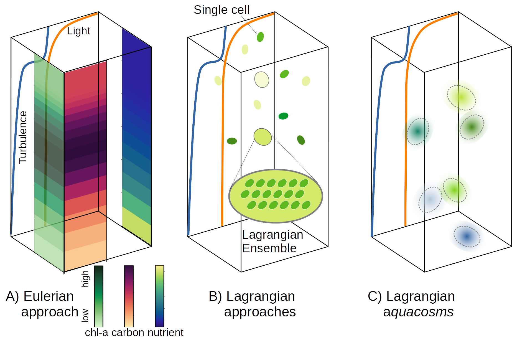
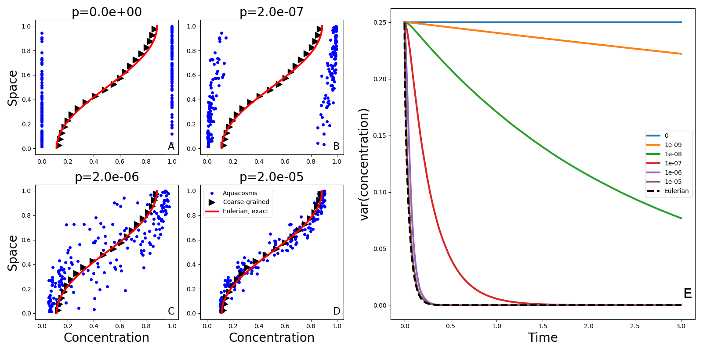
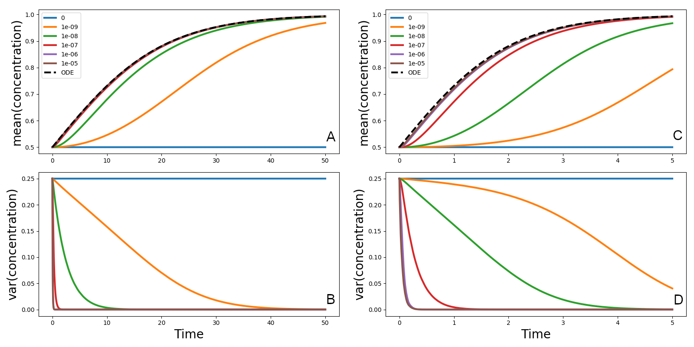
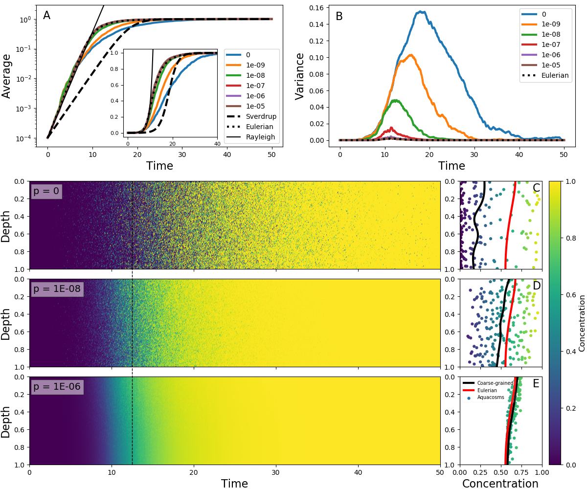
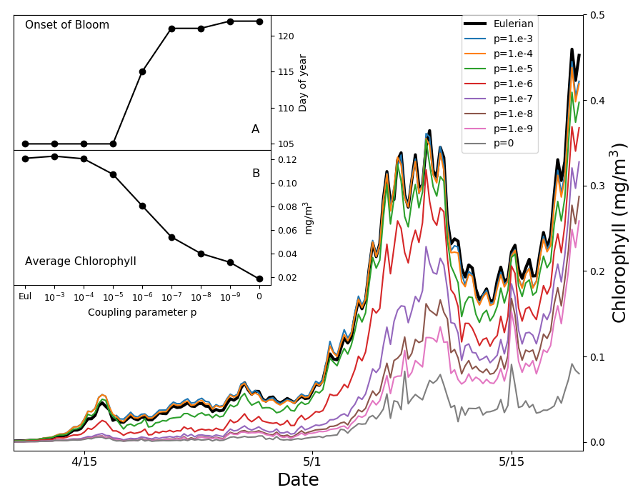
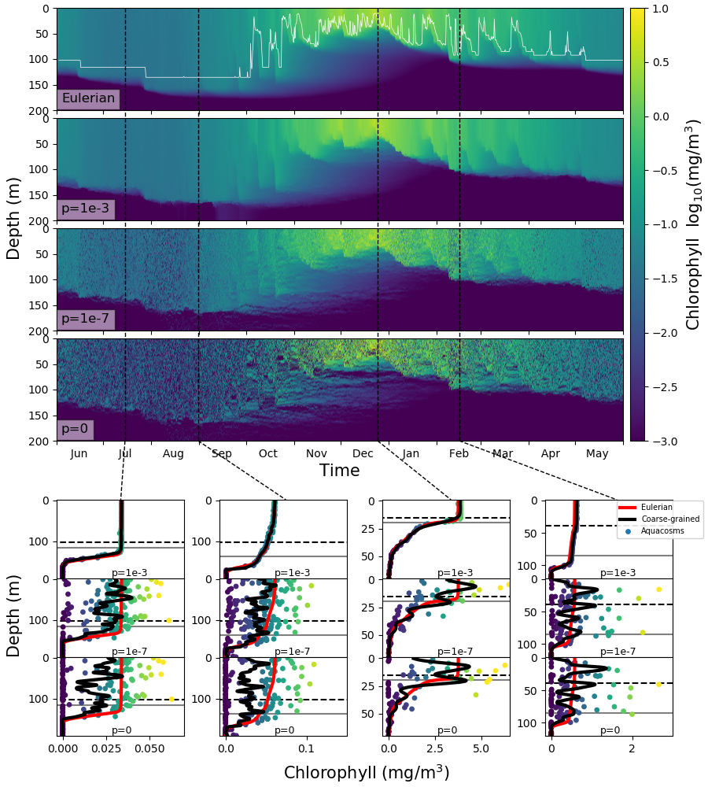
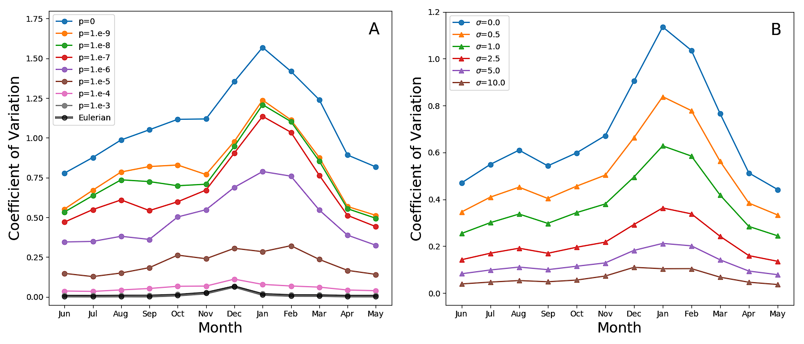
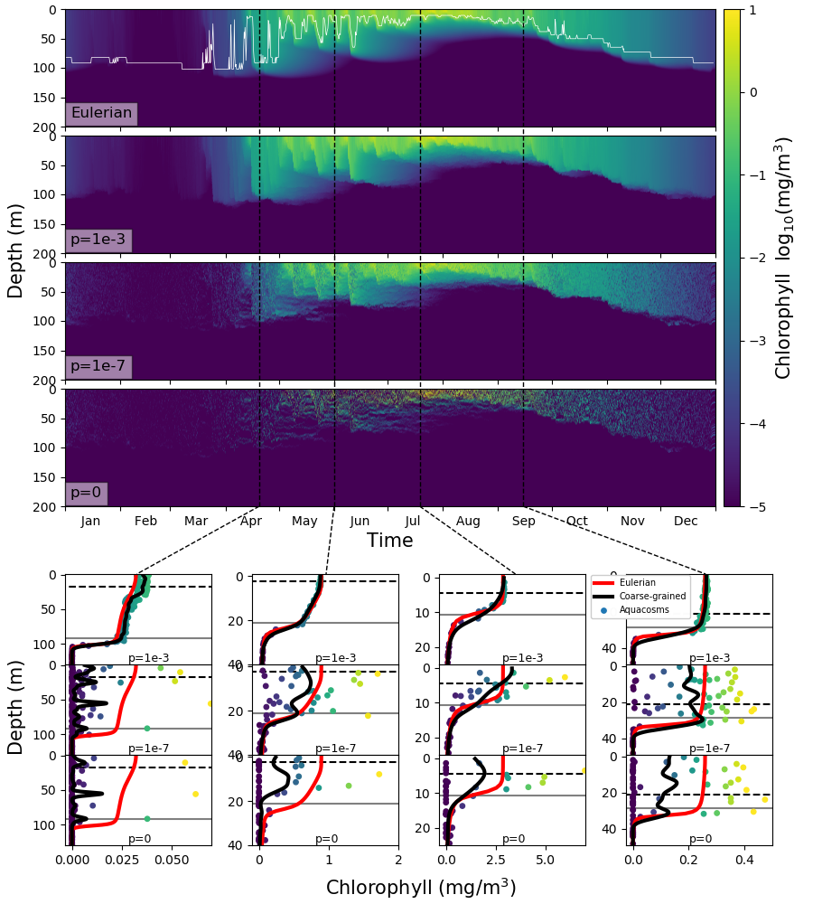
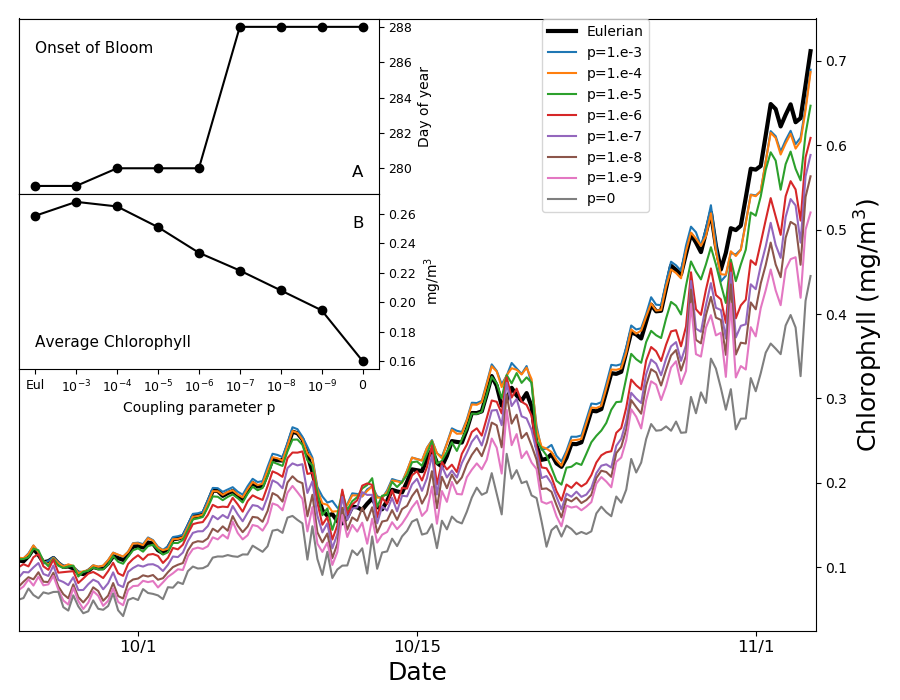
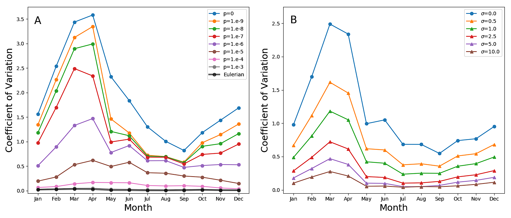

التحريك، والمزج، والنمو: عمليات المقياس المجهري تغير ديناميات العوالق النباتية على المقاييس الأكبر.
الملخص
إن الوصف الكمي للأنظمة البحرية مقيد بمشكلة جوهرية في فصل المقاييس: فمعظم العمليات الكيميائية الحيوية البحرية تحدث على مقاييس دون السنتيمتر، في حين تتجلى مساهمتها في الدورات البيوجيوكيميائية للأرض على مقاييس أكبر بكثير، وصولا إلى المقياس الكوكبي. وعلى الرغم من التحسن الهائل في قدرة الحوسبة وإمكانات الرصد، ظل نهج النمذجة مرتبطا بتصور قديم يرى أن المقاييس المجهرية لا تستطيع التأثير بصورة جوهرية في المقاييس الأكبر. وقد أدى غياب تقدير نظري واسع الانتشار للتآثرات بين مقاييس شديدة الاختلاف إلى تكاثر نماذج عددية ذات قدرات تنبؤية غير مؤكدة. نبين أن إطارا محسنا للنمذجة اللاغرانجية، يسمح بهذه التآثرات، يستطيع أن يعالج بسهولة مسائل محيرة مثل الفينولوجيا الخاصة بازدهارات العوالق النباتية، أو التغير الرأسي داخل الطبقات المختلطة.
Francesco Paparella,1∗ Marcello Vichi2
1Division of Sciences and Mathematics, Center on Stability, Instability and Turbulence, New York University Abu Dhabi,
Saadyiat Island, Abu Dhabi, UAE
2Department of Oceanography and Marine Research Institute, University of Cape Town
Cape Town, Rondebosch 7701, South Africa
∗To whom correspondence should be addressed; E-mail: francesco.paparella@nyu.edu.
مقدمة
تشارك العوالق النباتية البحرية في عدد من العمليات البيوجيوكيميائية على مقياس المحيط الميكروبي، وهي عمليات تؤثر في نظم بيئية كاملة [2, 39]. ولذلك فإن النماذج التنبؤية لعمليات العوالق النباتية أساسية في تطبيقات كثيرة. ففي إسقاطات المناخ تمثل “المضخة البيولوجية” مكونا أساسيا من دورة الكربون [27, 5]، وتوصف بنمذجة الإنتاج الأولي للعوالق النباتية والصادرات الصافية من المادة العضوية عبر الشبكة الغذائية البحرية وعمود الماء. كما تستخدم نماذج العمليات البيوجيوكيميائية وعمليات العوالق النباتية في علم المحيطات التشغيلي وإدارة السواحل [53, 34]. وتقترن النماذج التنبؤية للنقل الساحلي والقريب من الشاطئ بنماذج جودة المياه والنماذج البيوجيوكيميائية لتقديم تنبؤات بالاضطرابات غير المرغوبة مثل التخثث، ونقص الأكسجين، أو ازدهارات الطحالب الضارة. وفي نهاية المطاف تستخدم مخرجات هذه النماذج في إدارة المصايد، ونماذج النظم البيئية من البداية إلى النهاية، ومؤشرات صحة المحيط [65, 24].
غير أن هناك صعوبة أساسية في عملية النمذجة، وهي الهوة بين المقاييس التي تحدث عندها العمليات البيوجيوكيميائية وتتم ملاحظتها (بوساطة مجسات تنشر في المحيط، أو بتجارب مختبرية، أو بدراسات الميتاجينوميات [2, 60, 39])، وبين المقاييس التي يلتمس عندها، ويرصد، ويفسر استجابة النظام (بالاستشعار عن بعد، وتجميع البيانات، والنماذج). وتتيح التجارب المختبرية، مثل المزارع والميزوكوزمات، تقدير الحدود البيولوجية للنموذج تجريبيا بناء على افتراض التجانس في توزيع جميع الحقول الكيميائية الحيوية [13, 64]، مع إهمال الحدود الفيزيائية. وفي نهاية الأمر توكل التآثرات بين هذه الحدود إلى الحل العددي للنماذج الفيزيائية-البيوجيوكيميائية المقترنة [50, 49]، التي لا تستطيع أن تضم كل المقاييس المكانية والزمنية اللازمة لردم هذه الهوة.
في هذه الورقة نعالج النظرية التي تقوم عليها النماذج الفيزيائية-البيوجيوكيميائية البحرية، ونكشف بعض حدود النماذج الحالية، ونقترح نهجا جديدا. ولتوضيح وجهة نظرنا، نركز على الطبقة المختلطة في المحيط المفتوح وعلى ديناميات العوالق النباتية، وهي أساس بيوجيوكيمياء عمود الماء [39].
يبدي توزيع العوالق تغيرا من المقياس العالمي نزولا إلى المقياس المجهري (أطوال بالسنتيمتر) [52, 54]. ويتشكل التبقع العوالقي على المقياسين المتوسط ودون المتوسط بفعل التآثر بين عمليات النمو البيولوجي والتحريك الجانبي الاضطرابي المرتبط بدوامات الجبهات والتيارات في المحيط العلوي [45, 43, 41]. ولا يستطيع التحريك والمزج الجانبيان وحدهما توليد التبقع [45]. فلا بد من آلية إطلاق، ويمكن للعمليات المدفوعة فيزيائيا التي تؤثر في البنية الرأسية للطبقة المختلطة (أي على مقاييس أصغر من 100 m) أن تؤدي هذا الدور بسهولة. ويتعزز هذا التغير بدوره بفعل عمليات بيولوجية مثل التداخل بين تدرجات الضوء والمغذيات، وتعديلات طفو الخلايا، والانجذاب الجيروسكوبي، والسباحة المتقاربة، والرعي المعتمد على الضوء [32, 17, 10, 48]. وتشير تقنيات أخذ العينات الناشئة ذات الدقة العالية جدا إلى أن العوالق تبقى مرقعة عند مقاييس المتر الواحد رأسيا وأفقيا [23]، وأن التجانس قد لا يتحقق قبل مقاييس السنتيمتر [11, 16, 23]. وكما سنرى، يمكن للنماذج التي تفترض التجانس عند المقاييس الدقيقة والمجهرية أن تقع بسهولة في انحيازات خطيرة.
ينبغي إدراج ثلاث فئات من العمليات لنمذجة العمليات البيوجيوكيميائية البحرية عند المقياس المجهري: التحريك الاضطرابي، الذي تسببه دوامات المائع، ويزيح أحجام الماء ويمدها ويثنيها، فيزيد تدرجات الحقول المنقولة؛ والمزج غير العكوس، الذي تسببه عمليات دون-مجهرية، ويقلل هذه التدرجات؛ والنمو (أو الاضمحلال) الذي يغير تركيز الحقول بوسائل كيميائية أو بيولوجية. ومن حيث المبدأ، يجب أن تقابل هذه العمليات حدودا متميزة في المعادلات التي تحلها النماذج العددية. أما عمليا فيمكن استخدام صياغتين معرفتين على نحو واسع لبناء نموذج: الصياغة الأويلرية والصياغة اللاغرانجية. ويجعل اختيار الصياغة معادلات النموذج ملزمة بمجموعة من التقريبات التي قد لا تلتزم بدقة بهذا المبدأ.
معظم تطبيقات النماذج المذكورة أعلاه أويلرية [13, 38, 67, 1]. ففي هذه الصياغة تحدث العمليات الثلاث كلها عند عقد شبكة مكانية ثابتة، حيث توضع كل الحقول ذات الصلة (الشكل 1A). وباستدعاء تقريب الاستمرارية، تقرب المتغيرات البيولوجية كحقول متوسطة ملساء التغير، تكون قيمها عند عقد الشبكة ممثلة للقيم المتوسطة في خلية الشبكة [67]. ومن السمات المهمة للنماذج الأويلرية أن عمليات التحريك الاضطرابي غير المحلولة تستوعب بوصفها مزجا غير عكوس. ومع أن هذه الممارسة قد تحقق نتائج مرضية للمتتبعات غير المتفاعلة والمنقولة سلبيا، فإنها تعطي نتائج موضع شك، إن لم تكن معيبة، للمتتبعات البيولوجية والكيميائية، لأنها تفترض أن الاستجابة البيولوجية للحقل الأويلري المتوسط المحاكى هي نفس الاستجابة المتوسطة للبيئة الحقيقية غير المحلولة والمرقعة [51, 3].
وتستخدم نماذج أخرى الصياغة اللاغرانجية، التي تعزل إما أجزاء صغيرة من المائع أو عوامل بيولوجية منفردة، وتتبعها على امتداد حركتها (الشكل 1B). وعلى الرغم من تقريباتها (مثل كون عدد الجسيمات غير كاف لحل جميع بنى المائع، واستخدام عمليات عشوائية لمحاكاة الاضطراب)، تصف النماذج اللاغرانجية عمليات التحريك بوصفها كذلك، لا بوصفها آثارا مستوعبة في المزج غير العكوس. وفي نمذجة العوالق، كثيرا ما يشار إلى الصياغة اللاغرانجية، التي عرفت أصلا بمصطلح التجميع اللاغرانجي [71, 69, 70, 72]، باسم النمذجة القائمة على الأفراد [9]. ونرى أنه ينبغي التمييز بوضوح بين النماذج اللاغرانجية للخلية المفردة [73, 35]، التي تتبع حركة فرد واحد، لكنها لا تتضمن عمليات النمو/الموت ولا انقسام الخلايا، وبين التجميعات اللاغرانجية (الشكل 1B)، حيث يستخدم مفهوم الفرد الفائق [59] لوصف ديناميات جمهرة العوالق. وقد قرر بعض المؤلفين تفوق النهج اللاغرانجي في وصف ديناميات العوالق [72, 30, 29, 3].
غير أن هناك قيودا داخلية على تطبيق مفهوم الفرد الفائق في نمذجة مجتمعات العوالق النباتية، لأن التجميع اللاغرانجي لا يتصور أنه يتبادل مع التجميعات المحيطة أي عامل من العوامل الفاعلة التي يحملها (الشكل 1B). لذلك تهمل جميع النماذج اللاغرانجية تقريبا (ولكن انظر [14]) إدراج عمليات المزج غير العكوس. وفي الحالات المتفرقة التي قورنت فيها الصياغتان اللاغرانجية والأويلرية، يبدو أن هذه المسألة قد أغفلت [69, 37, 46, 36, 3]، مع أنها قد تؤدي إلى نتائج غير واقعية، بل ومفارقة.
لننظر في منطقة من المحيط ذات شروط ثابتة ومواتية لازدهار العوالق النباتية. ولنفترض توزيعا عشوائيا أوليا يقسم المائع إلى رقع صغيرة جدا، نصفها خال من العوالق النباتية، والآخر عند السعة الحاملة. ستحاكي تجميعات النموذج اللاغرانجي هذه الرقع، لكنها، في غياب أي تآثر متبادل، لن تسمح للعوالق الموجودة في الرقع التي بلغت السعة الحاملة بالوصول إلى الرقع المجاورة الفارغة وإطلاق النمو فيها. وستبقى التجميعات الخالية من العوالق النباتية خالية منها، وستظل الأخرى عند السعة الحاملة. وسيبقى التركيز الكلي، المحسوب كمتوسط على جميع التجميعات اللاغرانجية، إلى أجل غير محدد مساويا لنصف السعة الحاملة: نتيجة محيرة في ظل الظروف المواتية! في نموذج أويلري، سيزيح المزج غير العكوس سريعا تركيز العقد الفارغة عن الصفر، مطلقا النمو، بحيث يصل التركيز الكلي في النهاية إلى السعة الحاملة. غير أنه إذا كان التقسيم الأولي للرقع الفارغة والممتلئة أدق من أن يحل، فإن مقدار المزج غير العكوس الذي يحسبه النموذج الأويلري سيكون مبالغة فادحة في تقدير المقدار الحقيقي، مما يثير سؤالا عما إذا كان معدل النمو المنمذج للتركيز الكلي واقعيا [3].
يرتبط كل من التحريك الاضطرابي والمزج غير العكوس والنمو بمقاييسه الزمنية المتميزة. فعلى سبيل المثال، ينشأ نموذج سفيردروب الشهير [61] لبداية ازدهارات العوالق النباتية من افتراض أن المقياس الزمني للنمو أبطأ من المقياس الزمني للتحريك. وله أهمية تاريخية بالغة، وهو الحجر المؤسس الذي واجهته كل نماذج الازدهار اللاحقة، إما للبناء عليه، أو لقلبه [22, 58]. وله أيضا خاصية مميزة: بسبب خطيته، فإن استبدال التحريك بالمزج غير العكوس (إذا اتسم بالمقاييس الزمنية نفسها الخاصة بالتحريك) يترك النتائج بلا تغيير. وكما سنوضح فيما يلي، فإن هذا التكافؤ يضيع عند وجود حدود بيولوجية لاخطية: ففي النماذج اللاخطية الشبيهة بسفيردروب، يحدد الفصل بين المقاييس الزمنية للتحريك وللمزج غير العكوس وتيرة وطريقة نمو العوالق النباتية الكلي. وقد يكون تكاثر التفسيرات لحدوث الازدهارات، التي كثيرا ما تختلف فيما بينها بتفاصيل دقيقة، عرضا لغياب تقدير مسألة نظرية رئيسية: تبقع العوالق النباتية يؤثر في النمو الكلي.
وأحيانا بذلت محاولات لتمثيل آثار التبقع بارامتريا في النماذج البيوجيوكيميائية الأويلرية. وإذ أدرك مؤلفون مثل Fennel [19] أن الاستجابة البيولوجية تتأثر كثيرا بطريقة معالجة المقاييس غير المحلولة، فقد اقترحوا منذ زمن طويل استخدام معاملات بيولوجية “فعالة”. واقترحت بارامترية للتأخير الزمني في الحالة التي يكون فيها التبقع نتيجة ديناميات جمهرة تذبذبية تحدث بأطوار مختلفة في مواضع مختلفة [68]. ومؤخرا أدخلت بارامترية إغلاق تذكر بتلك المستخدمة في الاضطراب [44]. وهذا النهج صالح شكليا فقط عندما تكون التقلبات صغيرة، وهو ما تشير مقاطع الكلوروفيل عالية الدقة إلى أنه ليس الحال [15]. وبوجه عام يبدو أن معظم الأدبيات يغفل المسألة، ويعامل المتتبعات البيوجيوكيميائية بالطريقة نفسها التي يعامل بها المتتبعات غير المتفاعلة.
ونرى أن استراتيجية استبدال النقل غير المحلول بمزج غير عكوس، ثم تعويض الانحيازات الناتجة بوساطة نوع من البارامترية، ستواجه صعوبات طاغية. فمثلا، لأن شروطا ابتدائية مختلفة، مع إبقاء كل شيء آخر على حاله، قد تعطي معدلات نمو كلية مختلفة [51] (وهي مسألة لوحظت أيضا في العمل المبكر حول نظرية تبقع العوالق [45]).
إذا نمذجت عمليات التحريك الاضطرابي والمزج غير العكوس والنمو بصورة
منفصلة ومستقلة بعضها عن بعض، فينبغي أن يصبح استنساخ ديناميات واقعية
للعوالق النباتية في النماذج التنبؤية أيسر بكثير. وتحقق فئة من
الطرائق اللاغرانجية المقترحة حديثا [51] هذا الهدف بتصوير الجسيمات
اللاغرانجية على أنها تمثل أحجام تحكم مائية متجانسة بحجم المقياس
المجهري، بدلا من كائنات منفردة أو تجميعات. وفي هذا الإطار تمثل
عمليات المزج غير العكوس بتبادل تدفقات كتلية صغيرة بين جسيمات متجاورة.
ونطلق أكواكوزمات على هذه الجسيمات اللاغرانجية الخاضعة
لتدفقات الاقتران (الشكل 1C، انظر “الطرائق” للتفاصيل).
وينظم الاقتران معامل هو  ، تتناسب قيمته مع شدة التدفقات.
وكما سنبرهن، فإن
، تتناسب قيمته مع شدة التدفقات.
وكما سنبرهن، فإن  يحدد المقياس الزمني المرتبط بالتدمير
غير العكوس للتباين البيوجيوكيميائي عند المقاييس المجهرية، وهو في
هذا النهج يظل مستقلا عن المقاييس الزمنية للتحريك الميكانيكي. وتستعاد
نتائج مماثلة لنتائج نماذج التجميع اللاغرانجي عند الجسيمات غير المقترنة
(). وفي الحد المقابل، تنتج القيم الكبيرة ل
يحدد المقياس الزمني المرتبط بالتدمير
غير العكوس للتباين البيوجيوكيميائي عند المقاييس المجهرية، وهو في
هذا النهج يظل مستقلا عن المقاييس الزمنية للتحريك الميكانيكي. وتستعاد
نتائج مماثلة لنتائج نماذج التجميع اللاغرانجي عند الجسيمات غير المقترنة
(). وفي الحد المقابل، تنتج القيم الكبيرة ل  مزجا غير عكوس مفرطا، وتعطي نتائج تشبه بقوة المحاكاة الأويلرية.
مزجا غير عكوس مفرطا، وتعطي نتائج تشبه بقوة المحاكاة الأويلرية.

النتائج
فيما يلي نفحص النتائج التي حصلنا عليها بنماذج عمود الماء، فننظر أولا في بضع حالات مثالية، ثم في أوضاع أكثر واقعية في المحيط المفتوح من شمال المحيط الهادئ والمحيط الجنوبي. ونقارن نموذجا أويلريا تمثل فيه بارامتريا عملية التحريك الاضطرابي الرأسي بالانتشارية الدوامية، بنماذج أكواكوزم لاغرانجية تتميز بشدات مختلفة للمزج غير العكوس عند المقياس المجهري، حيث يمثل التحريك الاضطرابي الرأسي كحركات عشوائية للأكواكوزمات مطابقة للانتشارية الدوامية الأويلرية.
التحريك والمزج الخالصان

 . أما المثلثات السوداء فهي نسخة مخشنة من البيانات نفسها،
حصلنا عليها بمقدر نواة غاوسية بانحراف معياري 0.1 (انظر
الطرائق). E) التباين، بوصفه دالة في الزمن، في محاكاة
أكواكوزم لاغرانجية ذات قوة اقتران متغيرة
. أما المثلثات السوداء فهي نسخة مخشنة من البيانات نفسها،
حصلنا عليها بمقدر نواة غاوسية بانحراف معياري 0.1 (انظر
الطرائق). E) التباين، بوصفه دالة في الزمن، في محاكاة
أكواكوزم لاغرانجية ذات قوة اقتران متغيرة  (خطوط متصلة)
وتباين الحل الدقيق للمسألة الأويلرية (1)
(خط متقطع).
(خطوط متصلة)
وتباين الحل الدقيق للمسألة الأويلرية (1)
(خط متقطع).أولا سننظر في حالة التحريك الاضطرابي والمزج لمادة غير خاضعة لأي تفاعل. وبوحدات لا بعدية يكون النموذج الأويلري الانتشاري الدوامي هو
| (1) |
حيث يمثل  تركيز المادة غير المتفاعلة، الخاضعة لشروط حدية
عديمة التدفق في عمود الماء . وفي هذه الصياغة يستبدل التحريك
الاضطرابي بالكامل بمزج غير عكوس، يوصف رياضيا بالحد الواقع في الطرف
الأيمن من المعادلة. وبوصفه شرطا ابتدائيا، نختار دالة الخطوة
تركيز المادة غير المتفاعلة، الخاضعة لشروط حدية
عديمة التدفق في عمود الماء . وفي هذه الصياغة يستبدل التحريك
الاضطرابي بالكامل بمزج غير عكوس، يوصف رياضيا بالحد الواقع في الطرف
الأيمن من المعادلة. وبوصفه شرطا ابتدائيا، نختار دالة الخطوة
| (2) |
في نهج الأكواكوزم اللاغرانجي، وكما في الطرائق اللاغرانجية الأخرى،
يمثل التحريك الاضطرابي كحركة براونية تخلط مواضع الجسيمات. ويمثل
المزج غير العكوس على نحو منفصل، وتحدد شدته بقيمة معامل الاقتران
 (انظر الطرائق). وتوضع الأكواكوزمات (الجسيمات اللاغرانجية)
ابتدائيا في مواضع عشوائية منتظمة داخل المجال؛ فتأخذ تلك الواقعة
في النصف الأول تركيزا صفريا، وتأخذ الأخرى تركيزا مقداره واحد.
(انظر الطرائق). وتوضع الأكواكوزمات (الجسيمات اللاغرانجية)
ابتدائيا في مواضع عشوائية منتظمة داخل المجال؛ فتأخذ تلك الواقعة
في النصف الأول تركيزا صفريا، وتأخذ الأخرى تركيزا مقداره واحد.
تعرض الأشكال 2A-D تركيز الأكواكوزمات
ومواضعها لقيم مختلفة من معامل الاقتران  ، إلى جانب الحل
التحليلي للمعادلة (1). وتنتج الحركة البراونية تبقعا:
تعاقبا عشوائيا لجسيمات ذات قيم تركيز مرتفعة ومنخفضة. ويساوي المزج
غير العكوس تراكيز الجسيمات المتجاورة، فيزيل التبقع بفاعلية متزايدة
كلما زادت قوة الاقتران
، إلى جانب الحل
التحليلي للمعادلة (1). وتنتج الحركة البراونية تبقعا:
تعاقبا عشوائيا لجسيمات ذات قيم تركيز مرتفعة ومنخفضة. ويساوي المزج
غير العكوس تراكيز الجسيمات المتجاورة، فيزيل التبقع بفاعلية متزايدة
كلما زادت قوة الاقتران  . والمتوسطات المحلية الموزونة للنتيجة
اللاغرانجية (المثلثات السوداء، انظر الطرائق) تكاد تكون مطابقة للحل
التحليلي للنموذج الأويلري. وقد يوحي هذا التطابق بأن النموذج الأويلري
وجميع النماذج اللاغرانجية متكافئة. غير أن عملية التخشن المتمثلة
في أخذ متوسطات محلية لا تعطي إلا صورة جزئية. فاللوحات A-D لا تصور
فيزياء مجهرية متكافئة. فالتركيز الذي تحمله الجسيمات المنفردة (وهو،
في نهاية المطاف، كل ما يهم حدود التفاعل عند وجودها) يختلف اختلافا
هائلا في الحالات الأربع. ومقدار المزج غير العكوس، الذي يضبطه المعامل
. والمتوسطات المحلية الموزونة للنتيجة
اللاغرانجية (المثلثات السوداء، انظر الطرائق) تكاد تكون مطابقة للحل
التحليلي للنموذج الأويلري. وقد يوحي هذا التطابق بأن النموذج الأويلري
وجميع النماذج اللاغرانجية متكافئة. غير أن عملية التخشن المتمثلة
في أخذ متوسطات محلية لا تعطي إلا صورة جزئية. فاللوحات A-D لا تصور
فيزياء مجهرية متكافئة. فالتركيز الذي تحمله الجسيمات المنفردة (وهو،
في نهاية المطاف، كل ما يهم حدود التفاعل عند وجودها) يختلف اختلافا
هائلا في الحالات الأربع. ومقدار المزج غير العكوس، الذي يضبطه المعامل
 ، يحدد مدى سرعة تبدد التقلبات حول المتوسطات المحلية (الشكل
2E)، أي إن
، يحدد مدى سرعة تبدد التقلبات حول المتوسطات المحلية (الشكل
2E)، أي إن  يحدد المقياس الزمني المرتبط بعمليات
المزج غير العكوس. وعندما يكون المزج غير العكوس قويا (قيم عالية
ل
يحدد المقياس الزمني المرتبط بعمليات
المزج غير العكوس. وعندما يكون المزج غير العكوس قويا (قيم عالية
ل  )، فإن التقلبات حول المتوسطات المحلية، ومن ثم التباين،
تضمحل بالسرعة نفسها كما في الحالة الأويلرية. أما للقيم الأصغر من
)، فإن التقلبات حول المتوسطات المحلية، ومن ثم التباين،
تضمحل بالسرعة نفسها كما في الحالة الأويلرية. أما للقيم الأصغر من
 فيمكن جعل مقياس اضمحلال التباين الزمني كبيرا كيفما كان:
إذ قد تستمر التقلبات حتى عندما توحي المتوسطات المحلية بوجود مقطع
تركيز شبه منتظم رأسيا. وفي الحالة الحدية
فيمكن جعل مقياس اضمحلال التباين الزمني كبيرا كيفما كان:
إذ قد تستمر التقلبات حتى عندما توحي المتوسطات المحلية بوجود مقطع
تركيز شبه منتظم رأسيا. وفي الحالة الحدية  (جسيمات غير مقترنة)
يحافظ كل أكواكوزم على تركيزه الابتدائي، ويبقى التباين ثابتا في
الزمن، مع أن المتوسطات المحلية ما تزال تميل إلى التجانس، كما تنص
(1).
(جسيمات غير مقترنة)
يحافظ كل أكواكوزم على تركيزه الابتدائي، ويبقى التباين ثابتا في
الزمن، مع أن المتوسطات المحلية ما تزال تميل إلى التجانس، كما تنص
(1).
توسيع نموذج سفيردروب
بعد ذلك نضيف إلى المعادلة (1) حد نمو لوجستي بسيطا. وبوحدات ذات أبعاد يكون نموذجنا هو
 |
(3) |
حيث إن  هي الانتشارية الدوامية، ويفترض أنها ثابتة، و
هي الانتشارية الدوامية، ويفترض أنها ثابتة، و هو معدل النمو الأقصى للعوالق النباتية، ذات التركيز
هو معدل النمو الأقصى للعوالق النباتية، ذات التركيز  والسعة
الحاملة
والسعة
الحاملة  . وتفرض شروط حدية صفرية التدفق عند طرفي عمود الماء،
أي عند
. وتفرض شروط حدية صفرية التدفق عند طرفي عمود الماء،
أي عند  و. وهذا النموذج أعم من نموذج سفيردروب الأصلي،
إذ إنه لا يضع بعد أي افتراض حول الحجم النسبي للمقاييس الزمنية للتحريك
الاضطرابي والعمليات البيولوجية، ويتضمن حد نمو/فقد لاخطيا. لكنه
ما يزال يمثل التحريك بارامتريا بحد انتشار دوامي، وبذلك يستبدل التحريك
بالمزج غير العكوس. وتقيس الدالة اللابعدية
و. وهذا النموذج أعم من نموذج سفيردروب الأصلي،
إذ إنه لا يضع بعد أي افتراض حول الحجم النسبي للمقاييس الزمنية للتحريك
الاضطرابي والعمليات البيولوجية، ويتضمن حد نمو/فقد لاخطيا. لكنه
ما يزال يمثل التحريك بارامتريا بحد انتشار دوامي، وبذلك يستبدل التحريك
بالمزج غير العكوس. وتقيس الدالة اللابعدية  التوازن بين
النمو المحفز بالضوء وفقد الكتلة الحيوية بسبب التنفس. وقد عرفها
سفيردروب على الصورة
التوازن بين
النمو المحفز بالضوء وفقد الكتلة الحيوية بسبب التنفس. وقد عرفها
سفيردروب على الصورة
| (4) |
حيث إن  معدل تنفس ثابت، و
معدل تنفس ثابت، و مقياس لشفافية الماء،
إلا أن حجة سفيردروب تصح لأي دالة قابلة للتكامل
مقياس لشفافية الماء،
إلا أن حجة سفيردروب تصح لأي دالة قابلة للتكامل  محصورة
بين حدود
محصورة
بين حدود  . وباختيار
. وباختيار  وحدة للطول، و
وحدة للطول، و وحدة
للزمن، و
وحدة
للزمن، و وحدة للتركيز، تأخذ المعادلة (3)
الصيغة اللابعدية:
وحدة للتركيز، تأخذ المعادلة (3)
الصيغة اللابعدية:
 |
(5) |
ويعبر المعامل عن نسبة المقاييس الزمنية للتحريك/المزج
إلى المقاييس الزمنية البيولوجية (ويقدر الأول عبر الانتشارية الدوامية
بوصفه ). وشكليا ينطبق تقريب سفيردروب عند تلاشي  ،
حين يمكن القول إن الفيزياء والبيولوجيا تنفصلان: ففي تلك الحالة
يجعل حد الانتشار الدوامي الشرط الابتدائي متجانسا رأسيا بعد طور
انتقالي لا يزيد على ، مع إبقاء التركيز
،
حين يمكن القول إن الفيزياء والبيولوجيا تنفصلان: ففي تلك الحالة
يجعل حد الانتشار الدوامي الشرط الابتدائي متجانسا رأسيا بعد طور
انتقالي لا يزيد على ، مع إبقاء التركيز  مستقلا عن
العمق في جميع الأزمنة اللاحقة. وعندئذ، على مقاييس زمنية ،
يتغير التركيز الثابت رأسيا في الزمن وفقا للمعادلة التفاضلية العادية
مستقلا عن
العمق في جميع الأزمنة اللاحقة. وعندئذ، على مقاييس زمنية ،
يتغير التركيز الثابت رأسيا في الزمن وفقا للمعادلة التفاضلية العادية
| (6) |
حيث إن هو تكامل  على عمود الماء، وتشير النقطة
إلى مشتقة بالنسبة إلى الزمن. وعمليا يعطي هذا الاستدلال تقريبا جيدا
حتى
على عمود الماء، وتشير النقطة
إلى مشتقة بالنسبة إلى الزمن. وعمليا يعطي هذا الاستدلال تقريبا جيدا
حتى  .
.
في صياغتنا اللاغرانجية لهذه المسألة تتحرك الأكواكوزمات بأداء حركة براونية. ويتحدد التركيز في كل أكواكوزم بالمعادلة التفاضلية العادية المرتبطة بحد التفاعل في (5)، وبالفيضانات الاقترانية التي تمثل المزج غير العكوس (انظر الطرائق). وإذا خطي حد النمو، فإن النهج الأويلري الانتشاري الدوامي والنهج اللاغرانجي يكونان متكافئين بمعنى مخشن (كما لاحظ جزئيا مؤلفون آخرون [37, 46])، لكننا نبين هنا، ونبرهن تحليليا في القسم S1 من المواد التكميلية، أن الحدود البيولوجية اللاخطية تكسر هذا التكافؤ.

 ،
(A, B) أو
،
(A, B) أو  (C, D) والشرط الابتدائي الخطوي (2).
تشير الخطوط المتصلة إلى محاكاة أكواكوزم لاغرانجية ذات قوة متغيرة
لمعامل الاقتران
(C, D) والشرط الابتدائي الخطوي (2).
تشير الخطوط المتصلة إلى محاكاة أكواكوزم لاغرانجية ذات قوة متغيرة
لمعامل الاقتران  . والخط المتقطع هو حل تقريب سفيردروب
(6). لاحظ اختلاف مجالات محاور الزمن.
. والخط المتقطع هو حل تقريب سفيردروب
(6). لاحظ اختلاف مجالات محاور الزمن.يبين الشكل 3 متوسط تركيز العوالق النباتية وتباينه بوصفهما
دالتين في الزمن للمعادلة (5) ونظيرها الأكواكوزمي، مع
، والشرط الابتدائي (2)، وقيمتين للنسبة  و
و . وكما عرضنا في المقدمة، لأن جميع طرود المائع تضبط
ابتدائيا عند نقطة ثابتة لحدود التفاعل، فإن المتوسط مع جسيمات غير
مقترنة (
. وكما عرضنا في المقدمة، لأن جميع طرود المائع تضبط
ابتدائيا عند نقطة ثابتة لحدود التفاعل، فإن المتوسط مع جسيمات غير
مقترنة ( ، كما في نموذج تجميع لاغرانجي) يبقى بصورة غير
واقعية عند نصف السعة الحاملة رغم معدل النمو الموجب. وعندما يفعل
الاقتران بين الأكواكوزمات، يميل المتوسط تدريجيا إلى السعة الحاملة
()، ويميل التباين إلى الصفر. وتعتمد سرعة الاقتراب من القيم
المقاربة على قوة معامل الاقتران
، كما في نموذج تجميع لاغرانجي) يبقى بصورة غير
واقعية عند نصف السعة الحاملة رغم معدل النمو الموجب. وعندما يفعل
الاقتران بين الأكواكوزمات، يميل المتوسط تدريجيا إلى السعة الحاملة
()، ويميل التباين إلى الصفر. وتعتمد سرعة الاقتراب من القيم
المقاربة على قوة معامل الاقتران  : فالقيم العالية تنتج نتائج
تتصرف تماما كما تتنبأ نظرية سفيردروب، أما القيم الصغيرة فتنتج منحنيات
نمو لا تشبه حل المعادلة التفاضلية العادية المرتبطة بحد التفاعل.
ولأن نظرية سفيردروب تفترض تكافؤ التحريك والمزج غير العكوس، فإن
المقاييس الزمنية لنوعي العمليتين واحدة: فطرد ماء خال من العوالق
وطرد آخر ممتلئ بالعوالق يساويان تركيزهما ضمن مقياس التحريك الزمني.
وعندما يعامل التحريك والمزج كعمليتين منفصلتين، ويسمح للثانية بأن
تكون أبطأ من الأولى، تبذر الطرود الخالية من العوالق باستمرار بفعل
الطرود الممتلئة، ويحدد معدل النمو الكلي بتداخل دقيق بين العمليات
البيولوجية والتحريك الاضطرابي والمزج غير العكوس. ولا تأخذ نماذج
التجميع اللاغرانجي في الحسبان إلا الأول، أما النماذج الأويلرية
الانتشارية الدوامية فتغلب عليها الثانية. ونلاحظ أنه في بيئة عامة
غير متجانسة تتزامن فيها عمليات التحريك والمزج والنمو، لا يوجد سبب
لتوقع أن يوصف التركيز الكلي للعوالق النباتية حصرا بالمعادلة التفاضلية
العادية المرتبطة بحدود التفاعل.
: فالقيم العالية تنتج نتائج
تتصرف تماما كما تتنبأ نظرية سفيردروب، أما القيم الصغيرة فتنتج منحنيات
نمو لا تشبه حل المعادلة التفاضلية العادية المرتبطة بحد التفاعل.
ولأن نظرية سفيردروب تفترض تكافؤ التحريك والمزج غير العكوس، فإن
المقاييس الزمنية لنوعي العمليتين واحدة: فطرد ماء خال من العوالق
وطرد آخر ممتلئ بالعوالق يساويان تركيزهما ضمن مقياس التحريك الزمني.
وعندما يعامل التحريك والمزج كعمليتين منفصلتين، ويسمح للثانية بأن
تكون أبطأ من الأولى، تبذر الطرود الخالية من العوالق باستمرار بفعل
الطرود الممتلئة، ويحدد معدل النمو الكلي بتداخل دقيق بين العمليات
البيولوجية والتحريك الاضطرابي والمزج غير العكوس. ولا تأخذ نماذج
التجميع اللاغرانجي في الحسبان إلا الأول، أما النماذج الأويلرية
الانتشارية الدوامية فتغلب عليها الثانية. ونلاحظ أنه في بيئة عامة
غير متجانسة تتزامن فيها عمليات التحريك والمزج والنمو، لا يوجد سبب
لتوقع أن يوصف التركيز الكلي للعوالق النباتية حصرا بالمعادلة التفاضلية
العادية المرتبطة بحدود التفاعل.

 . والخط
المتقطع هو حل تقريب سفيردروب (6). أما الخط الأسود الرفيع
فهو نمو أسي بمعدل مقدر بوساطة خارج رايلي (القسم S2 في المواد التكميلية)
المرتبط بالمعادلة (5). ويعرض الشكل الداخلي البيانات نفسها
كما في اللوحة A، لكن بمحور رأسي خطي لا لوغاريتمي. (اللوحات السفلية)
تركيز العوالق بوصفه دالة في العمق والزمن لمحاكاة لاغرانجية مع
. (C-E) تركيز الأكواكوزمات وعمقها (نقاط)،
والتركيز المخشن للأكواكوزمات (خط أسود)، والحل العددي للنموذج الأويلري
(خط أحمر) عند الزمن الموسوم بالخط الأسود المتقطع في اللوحات اليسرى.
. والخط
المتقطع هو حل تقريب سفيردروب (6). أما الخط الأسود الرفيع
فهو نمو أسي بمعدل مقدر بوساطة خارج رايلي (القسم S2 في المواد التكميلية)
المرتبط بالمعادلة (5). ويعرض الشكل الداخلي البيانات نفسها
كما في اللوحة A، لكن بمحور رأسي خطي لا لوغاريتمي. (اللوحات السفلية)
تركيز العوالق بوصفه دالة في العمق والزمن لمحاكاة لاغرانجية مع
. (C-E) تركيز الأكواكوزمات وعمقها (نقاط)،
والتركيز المخشن للأكواكوزمات (خط أسود)، والحل العددي للنموذج الأويلري
(خط أحمر) عند الزمن الموسوم بالخط الأسود المتقطع في اللوحات اليسرى.تبين الأمثلة حتى الآن أن التحريك السريع لشرط ابتدائي على هيئة خطوة ينتج تبقعا، يؤثر لاحقا في معدل النمو الكلي. وقد أولي اهتمام كبير لحالة النمو البيولوجي غير المتجانس (مثلا باستخدام الصيغة (4) من أجل ) عندما يكون النمو أسرع من التحريك. عندئذ، وبحسب نظرية الاضطراب الحرج [33, 62, 20]، تسهم العوالق النباتية الأقرب إلى السطح في النمو الإجمالي بأكثر مما تقدمه نظرية سفيردروب، بحيث قد يبدأ الازدهار حتى عندما لا يسمح متوسط الضوء بذلك. كما أكد أن اختلافات تاريخ الضوء والتأقلم تنتج نموا عندما تتنبأ نظرية سفيردروب بالاضمحلال [37, 70, 18]. وما لم يبرز هو أن هذه الشروط ستؤدي أيضا، بصورة طبيعية، إلى تكوين التبقع إذا لم تكن عمليات المزج غير العكوس سريعة بما يكفي لإزالته. فعندما يكون النمو أسرع من التحريك الاضطرابي، يكون للعوالق النباتية في طرود الماء عند الأعماق الضحلة وقت لتنمو نموا أكبر بكثير مما تنموه في الطرود الأعمق التي تقضي بعض الوقت في الظلام. ومع جعل التحريك بعض الجسيمات الضحلة تهبط واستبدالها ببعض الجسيمات التي كانت في العمق، ينشأ تبقع مجهري. وكما في حالة الشرط الابتدائي الخطوي، يؤثر التبقع في النمو. ومع تقدم الازدهار تبلغ طرود الماء التي قضت أطول وقت قرب السطح السعة الحاملة قبل غيرها، وتصبح سرعة النمو الكلي منظمة بشدة المزج غير العكوس، الذي ينقل العوالق من الجسيمات عالية التركيز إلى الجسيمات منخفضة التركيز.
توضح هذه العملية في الشكل 4 لدرجات مختلفة من الاقتران
بين الأكواكوزمات. ففي النظام الخطي، عندما يكون تركيز العوالق النباتية
أصغر بكثير من السعة الحاملة، يظهر النموذج الأويلري (5)
وجميع النماذج اللاغرانجية معدل النمو نفسه للتركيز الكلي (الشكل
4A)، وهو أكبر مما تمليه نظرية سفيردروب. ويتفق ذلك مع توصيفات
الاضطراب الحرج (انظر القسم S2 من المواد التكميلية) ما دامت العملية
خطية. أما في النظام اللاخطي، فتعطي النماذج اللاغرانجية نتائج متمايزة:
إذ ينمو التباين مع الزمن عند قوة اقتران صغيرة (الشكل 4B)، ويؤدي
ذلك إلى نمو كلي أبطأ بكثير مما في النموذج الأويلري الانتشاري الدوامي،
بسبب البيئة المرقعة. ومرة أخرى، فإن تدمير التباين باستخدام معامل
اقتران قوي بما يكفي يستعيد نتائج النموذج الأويلري. ويبين الشكل
4C-E أن التباين يقابل بالفعل تبقعا: فعند انخفاض  ،
توجد أكواكوزمات ذات تراكيز شديدة الاختلاف بعضها بجوار بعض، ويفقد
التكافؤ المخشن بين النماذج اللاغرانجية والأويلرية.
،
توجد أكواكوزمات ذات تراكيز شديدة الاختلاف بعضها بجوار بعض، ويفقد
التكافؤ المخشن بين النماذج اللاغرانجية والأويلرية.
المقاييس المجهرية وفينولوجيا العوالق النباتية
لإظهار أثر المزج غير العكوس في فينولوجيا العوالق النباتية، شغلنا نموذجا أويلريا انتشاريا دواميا ونماذج أكواكوزم لاغرانجية. وتستخدم هذه النماذج مقاطع واقعية للانتشارية الدوامية وبيانات إشعاع شمسي ساقط تمتد عاما واحدا، وتمثل الشروط الموجودة عند محطة المحيط PAPA في شمال شرق المحيط الهادئ وفي المنطقة دون القطبية الجنوبية من المحيط الجنوبي، كما تستخدم نسخة مبسطة من نموذج بيوجيوكيميائي مستعمل حاليا في محاكاة مناخ المحيط، حيث يكون توفر الضوء عامل الحد الصريح الوحيد، ويمثل حد وفيات ناتج من الازدحام رعي العوالق الحيوانية بارامتريا (انظر الطرائق).

 . ويشير الخط الأسود السميك إلى النموذج الأويلري الانتشاري الدوامي.
يعرض الشكل الداخلي A يوم بداية الازدهار (انظر النص الرئيس)؛ ويعرض
الشكل الداخلي B متوسط الكلوروفيل في الفترة من 15 نيسان/أبريل
إلى 15 أيار/مايو، وكلاهما مرسوم بوصفه دالة في معامل الاقتران.
. ويشير الخط الأسود السميك إلى النموذج الأويلري الانتشاري الدوامي.
يعرض الشكل الداخلي A يوم بداية الازدهار (انظر النص الرئيس)؛ ويعرض
الشكل الداخلي B متوسط الكلوروفيل في الفترة من 15 نيسان/أبريل
إلى 15 أيار/مايو، وكلاهما مرسوم بوصفه دالة في معامل الاقتران.يبين الشكل 5 متوسط محتوى الكلوروفيل عند محطة PAPA فوق أول
50 m من عمود الماء في الأسابيع التي يبدأ فيها الازدهار. ونعرّف
بداية الازدهار بأنها أول يوم من السنة يتجاوز فيه محتوى الكلوروفيل
الوسيط مضافا إليه 5% من تركيز الكلوروفيل اليومي المتتبع على
مدى سنة واحدة [55]. وتؤخر تخفيضات قوة الاقتران  البداية
أكثر من أسبوعين. وتتباعد النتائج بعضها عن بعض قبل بداية التطبق،
من منتصف نيسان/أبريل حتى بداية أيار/مايو، عندما يكون عمق الطبقة
المختلطة m (الشكل التكميلي S1)
وتكون الانتشارية الدوامية النموذجية للطبقة المختلطة
m2s-1، مما يعطي قيمة مع معدل النمو
يوم-1. وهذا يوحي بأننا نشاهد العملية نفسها الموضحة في الشكل
4، حيث يسمح المزج غير العكوس الضعيف بتكوين تبقع مجهري عال،
فيخفض النمو الكلي ويؤخر الازدهار. ويظهر النموذج اللاغرانجي غير
المقترن أي اقتران أبطأ نمو، لكن هذا النهج غير واقعي كما برهنا
أعلاه. وفي الأيام 15 التالية تصبح الطبقة المختلطة أضحل بكثير
(الشكل التكميلي S1)، مع قيم نموذجية للانتشارية الدوامية تبلغ
m2s-1.
وتصبح المقاييس الزمنية للنمو والتحريك متقاربة، ويتوقف تدرج الضوء
الرأسي عن كونه مصدرا للتبقع. ولا يستمر كمصدر للتبقع إلا احتجاز
الأكواكوزمات الفقيرة بالعوالق النباتية عند قاعدة الطبقة المختلطة.
وبوجه عام يتغير محتوى الكلوروفيل المتوسط على شهر بدء الازدهار
بما يصل إلى عامل 6 تبعا لقوى الاقتران (الشكل الداخلي B في
الشكل 5).
البداية
أكثر من أسبوعين. وتتباعد النتائج بعضها عن بعض قبل بداية التطبق،
من منتصف نيسان/أبريل حتى بداية أيار/مايو، عندما يكون عمق الطبقة
المختلطة m (الشكل التكميلي S1)
وتكون الانتشارية الدوامية النموذجية للطبقة المختلطة
m2s-1، مما يعطي قيمة مع معدل النمو
يوم-1. وهذا يوحي بأننا نشاهد العملية نفسها الموضحة في الشكل
4، حيث يسمح المزج غير العكوس الضعيف بتكوين تبقع مجهري عال،
فيخفض النمو الكلي ويؤخر الازدهار. ويظهر النموذج اللاغرانجي غير
المقترن أي اقتران أبطأ نمو، لكن هذا النهج غير واقعي كما برهنا
أعلاه. وفي الأيام 15 التالية تصبح الطبقة المختلطة أضحل بكثير
(الشكل التكميلي S1)، مع قيم نموذجية للانتشارية الدوامية تبلغ
m2s-1.
وتصبح المقاييس الزمنية للنمو والتحريك متقاربة، ويتوقف تدرج الضوء
الرأسي عن كونه مصدرا للتبقع. ولا يستمر كمصدر للتبقع إلا احتجاز
الأكواكوزمات الفقيرة بالعوالق النباتية عند قاعدة الطبقة المختلطة.
وبوجه عام يتغير محتوى الكلوروفيل المتوسط على شهر بدء الازدهار
بما يصل إلى عامل 6 تبعا لقوى الاقتران (الشكل الداخلي B في
الشكل 5).
بعد ذلك نحاكي المحيط المفتوح في المنطقة دون القطبية الجنوبية (SAZ)، التي تتسم بطبقة مختلطة أعمق من 100 m من تموز/يوليو إلى تشرين الأول/أكتوبر (الشكل S2). والنموذج البيولوجي هو نفسه المستخدم في محاكاة PAPA، لكن بسبب برودة حرارة الماء تستخدم قيم معاملات مختلفة، ولا سيما أن معدل التمثيل الضوئي الأقصى يضبط عند يوم-1 (انظر الطرائق). وعلى امتداد السنة تبلغ القيم النموذجية المحاكاة للانتشارية الدوامية في الطبقة المختلطة m2s-1، وهي تقابل . وهنا لا يكون النمو أسرع من التحريك قط، ويظل تقريب سفيردروب صالحا. لذلك لا يساهم في خلق التبقع داخل الطبقة المختلطة إلا التعمق المتقطع للطبقة المختلطة، الذي يجرف أكواكوزمات خالية من العوالق النباتية من الأعماق. وفي الأيام التالية مباشرة لتعمق مفاجئ في الطبقة المختلطة، تذكر الديناميات بما هو مبين في الشكلين 2 و3، حيث يتفكك شرط ابتدائي خطوي أولا إلى تبقع، ثم يعاد إلى تجانس رأسي بسرعة تحددها شدة المزج غير العكوس. وكلما كان المزج أصغر، كان تدمير التباين أبطأ، وكان النمو الكلي للعوالق النباتية أبطأ (الشكل التكميلي S2). والفروق الفينولوجية والإنتاجية ليست بارزة كما في محاكاة PAPA، لكننا نلاحظ أن نماذج المناخ ذات الدقة الأخشن والأثر الأكبر للمزج غير العكوس يرجح أن تولد فروقا وتباينات أكبر في فينولوجيا الازدهار [28].
أفادت قياسات بصرية حيوية حديثة باستخدام عوامات ARGO من مناطق دون قطبية جنوبية [8] بوجود تباين كبير في الكلوروفيل داخل الطبقة المختلطة الهيدروغرافية. وفسر ذلك بأنه علامة على تدرجات رأسية في الكلوروفيل عند المقاييس الدقيقة (عشرات الأمتار)، مما استدعى آلية لا تتوافق مع وجود اضطراب قوي. وعلى وجه الخصوص، ذهب الرأي إلى أن فترات هدوء العواصف المرتبطة بتراخي الاضطراب قد تترك الطبقة المختلطة أحيانا متجانسة في الكثافة، لكنها محركة في جزئها الأعلى فقط، وبذلك تسمح بالنمو في المنطقة المضاءة، مولدة تدرجا رأسيا في الكلوروفيل.
في نماذجنا، ينتج تراخي الاضطراب وتدرجات الضوء الرأسية قطعا تدرجات
رأسية في الكلوروفيل، حتى عندما يمثل التحريك بوصفه مزجا غير عكوس
(انظر مثلا مقاطع المحاكاة الأويلرية في منتصف نيسان/أبريل ونهاية
أيار/مايو في الشكل S1)، وقد تعزز آثار نهملها، مثل الرعي المعتمد
على الضوء، هذه التدرجات كثيرا [48]. غير أن التبقع عند المقياس
المجهري هو المصدر الغالب للتباين في الطبقة المختلطة. ويظهر التبقع
بوضوح بصري في اللوحات السفلية من الشكل 6. وعند القيم المنخفضة
ل  ، تكون الفروق النسبية الكبيرة جدا في محتوى الكلوروفيل
بين الأكواكوزمات المتجاورة أمرا عاديا حتى فوق الحد الاضطرابي. ويقاس
هذا التغير الشديد في الشكل 7A (انظر الشكل التكميلي
S3A لمحاكاة PAPA)، الذي يبين المتوسط الشهري لمعامل تغير الكلوروفيل
(نسبة الانحراف المعياري إلى المتوسط) المحسوب فوق عمق الحد الاضطرابي،
وبذلك يستبعد آثار تراخي الاضطراب. وفي المحاكاة ذات المزج غير العكوس
المعتدل والمنخفض، لا يكون معامل التغير صغيرا بحيث يهمل قط، وحتى
عندما تكون الطبقة المختلطة في أقصى عمقها ويكون الاضطراب في أقوى
حالته، فإنه لا ينخفض دون نحو 0.5. وكما هو متوقع، يكون التغير
أكبر خلال أشهر الصيف في نصف الكرة الجنوبي، عندما يكون الاضطراب
أضعف مما هو عليه في المواسم الأخرى، مظهرا قمة ممتدة من الربيع إلى
الخريف، في اتفاق كامل مع التغير المرصود عبر الملاحظات الذاتية في
SAZ [42]. وفي المحاكاة الأويلرية، وفي المحاكاة اللاغرانجية ذات
المزج غير العكوس الشديد جدا، تكون القمة صغيرة وتحدث في كانون الأول/ديسمبر،
عندما تكون الطبقة المختلطة في أضحل حالاتها، في حين يبقى معامل التغير
غير مختلف عمليا عن الصفر في الأشهر الأخرى.
، تكون الفروق النسبية الكبيرة جدا في محتوى الكلوروفيل
بين الأكواكوزمات المتجاورة أمرا عاديا حتى فوق الحد الاضطرابي. ويقاس
هذا التغير الشديد في الشكل 7A (انظر الشكل التكميلي
S3A لمحاكاة PAPA)، الذي يبين المتوسط الشهري لمعامل تغير الكلوروفيل
(نسبة الانحراف المعياري إلى المتوسط) المحسوب فوق عمق الحد الاضطرابي،
وبذلك يستبعد آثار تراخي الاضطراب. وفي المحاكاة ذات المزج غير العكوس
المعتدل والمنخفض، لا يكون معامل التغير صغيرا بحيث يهمل قط، وحتى
عندما تكون الطبقة المختلطة في أقصى عمقها ويكون الاضطراب في أقوى
حالته، فإنه لا ينخفض دون نحو 0.5. وكما هو متوقع، يكون التغير
أكبر خلال أشهر الصيف في نصف الكرة الجنوبي، عندما يكون الاضطراب
أضعف مما هو عليه في المواسم الأخرى، مظهرا قمة ممتدة من الربيع إلى
الخريف، في اتفاق كامل مع التغير المرصود عبر الملاحظات الذاتية في
SAZ [42]. وفي المحاكاة الأويلرية، وفي المحاكاة اللاغرانجية ذات
المزج غير العكوس الشديد جدا، تكون القمة صغيرة وتحدث في كانون الأول/ديسمبر،
عندما تكون الطبقة المختلطة في أضحل حالاتها، في حين يبقى معامل التغير
غير مختلف عمليا عن الصفر في الأشهر الأخرى.
تشبه هذه النتائج، من أجل أو أقل، إحصاءات ملاحظات عوامات
ARGO في المحيط الجنوبي شبها قويا (الشكل 6 في [8])، لكنها
توحي بأن تغير الكلوروفيل، بدلا من أن يكون ناجما عن فرض خارجي، ينتج
في الغالب من اختلافات في التواريخ اللاغرانجية لطرود الماء [36, 3]
مع تعديله بالمزج غير العكوس. ونؤكد أن عوامات ARGO ليست أجهزة لقياس
مقاطع الكلوروفيل عالية الدقة [8]، ولا تستطيع تمثيل التقلبات
الرأسية بدقة على مقاييس أصغر من بضعة أمتار. وقد حسبت الخطوط السوداء
في اللوحات السفلية من الشكل 6 من تركيز الأكواكوزم باستخدام
إجراء تنعيم يعطي دقة 5 m (انظر الطرائق)، ومن ثم فهو قابل
للمقارنة مع دقة العوامات. تخمد تقلبات الكلوروفيل، لكنها لا تمحى
تماما. ويؤثر مقياس طول دقة الملاحظات في تقديرات التباين، كما وجد
عند استخدام أدوات أخذ عينات عالية التواتر [42]. وفي الشكل 7B
(الشكل S3B من أجل PAPA) نعرض المتوسط الشهري لمعامل تغير بيانات
المحاكاة المتعلقة ب  ، بعد أن خضعت لإجراء التخشن هذا عند
درجات دقة متعددة. ويعطي التنعيم الشديد تقديرات للتقلبات لا تبتعد
كثيرا عن تقديرات المحاكاة الأويلرية، ثم تزداد تدريجيا مع ازدياد
الدقة. لذلك، على الرغم من أن بيانات ARGO مدهشة في مقدار التغير
الذي تظهره، فإننا نشتبه في أن هذا لا يزال تقليلا من الواقع.
، بعد أن خضعت لإجراء التخشن هذا عند
درجات دقة متعددة. ويعطي التنعيم الشديد تقديرات للتقلبات لا تبتعد
كثيرا عن تقديرات المحاكاة الأويلرية، ثم تزداد تدريجيا مع ازدياد
الدقة. لذلك، على الرغم من أن بيانات ARGO مدهشة في مقدار التغير
الذي تظهره، فإننا نشتبه في أن هذا لا يزال تقليلا من الواقع.

 ، ونسختها المخشنة (خط
أسود، انظر الطرائق)، وعمق الطبقة المختلطة (خط رمادي أفقي)، وعمق
الحد الاضطرابي (خط أسود أفقي متقطع) في التاريخ الموسوم في اللوحات
العليا بخطوط سوداء رأسية متقطعة. وللمقارنة، يكرر في جميع اللوحات
المقابلة للتاريخ نفسه تركيز الكلوروفيل بوصفه دالة في العمق محسوبا
بالمحاكاة الأويلرية (خط أحمر).
، ونسختها المخشنة (خط
أسود، انظر الطرائق)، وعمق الطبقة المختلطة (خط رمادي أفقي)، وعمق
الحد الاضطرابي (خط أسود أفقي متقطع) في التاريخ الموسوم في اللوحات
العليا بخطوط سوداء رأسية متقطعة. وللمقارنة، يكرر في جميع اللوحات
المقابلة للتاريخ نفسه تركيز الكلوروفيل بوصفه دالة في العمق محسوبا
بالمحاكاة الأويلرية (خط أحمر).
 . ويشير الخط الأسود السميك إلى
المحاكاة الأويلرية الانتشارية الدوامية. B: المتوسط الشهري
لمعامل تغير المحاكاة اللاغرانجية مع ، والكمية نفسها
المحسوبة من مقاطع مخشنة باستخدام مقدر نواة غاوسية بانحراف معياري
m. ويشير الخط إلى النتائج غير المخشنة.
. ويشير الخط الأسود السميك إلى
المحاكاة الأويلرية الانتشارية الدوامية. B: المتوسط الشهري
لمعامل تغير المحاكاة اللاغرانجية مع ، والكمية نفسها
المحسوبة من مقاطع مخشنة باستخدام مقدر نواة غاوسية بانحراف معياري
m. ويشير الخط إلى النتائج غير المخشنة.المناقشة والخلاصة
عند النظر في ديناميات المقياس المتوسط، وحديثا ديناميات دون المقياس المتوسط، كثيرا ما أكد أن الأثر المشترك للتحريك الاضطرابي والعمليات الكيميائية الحيوية اللاخطية لا بد أن ينتج توزيعا غير منتظم ومرقعا للمتتبعات الفاعلة، وأن هذا بدوره قد يؤثر في الإنتاجية الكلية وبنية النظم البيئية المحيطية (انظر [45, 40, 43, 41] والمراجع الواردة فيه). ونؤكد هنا أن الفكرة الأساسية المعبر عنها في تلك الدراسات ينبغي أن تفحص أيضا عند مقاييس أصغر، مثلا عبر عمود الماء.
توجد كتلة كبيرة جدا من الأدبيات حول المشكلة المحددة التي تركز عليها هذه الورقة، وهي بداية ازدهارات المحيط المفتوح. ويتناول بعض هذه الأدبيات مسألة كيف تؤثر خواص اضطرابية مختلفة في النمو البيولوجي. غير أن التمييز بين المقاييس الزمنية للتحريك الاضطرابي والمقاييس الزمنية للمزج غير العكوس لا يؤخذ في الاعتبار قط. وعلى الرغم من تراكم الأدلة على الوجود الشائع للتبقع في الاتجاه الرأسي عبر الطبقة المختلطة، فإن نظريات بداية الازدهار تستبدل بحرية التحريك الاضطرابي بالمزج غير العكوس كما لو كانا شيئا واحدا (انظر المراجعة الحديثة [22] والمراجع الواردة فيها). ومن جهة أخرى، تركز الأدبيات المتعلقة بتبقع العوالق في الطبقة المختلطة [32, 17, 10, 48] على كشف الآليات الكامنة لكنها لا تبحث كيف يسهم التبقع في الإشارة عند المقاييس الأكبر، وكيف ينبغي إدراجه في النماذج التنبؤية. وفي العمل الحاضر حددنا آليتين بسيطتين ومتميزتين تخلقان التبقع رأسيا في الطبقة المختلطة، وأظهرنا كيف يؤثر ذلك في مقاييس زمنية أطول، مثل فينولوجيا الازدهار الربيعي. والآلية الأولى فيزيائية في جوهرها: فعندما يحتجز الاضطراب مياها أعمق وفقيرة بالعوالق النباتية داخل طبقة مختلطة غنية بالعوالق النباتية، ينتج التحريك الميكانيكي السريع عمود ماء شديد التبقع. أما الآلية الثانية فتتطلب وجود عملية نمو/اضمحلال معتمدة على العمق (مثلا بسبب تدرج الضوء الرأسي) تعمل على مقاييس زمنية أسرع من مقاييس التحريك الزمنية. وعندما يحدث ذلك، يخلق النمو غير المتكافئ عند أعماق مختلفة تدرجا رأسيا في المتتبعات الفاعلة، يتفكك إلى تبقع تحت فعل التحريك.
لا تستطيع النماذج الأويلرية التي تستبدل التحريك غير المحلول بمزج غير عكوس توليد أي تبقع من أي من هاتين الآليتين. ولأن مقياس زمن إزالة التقلبات هو نفسه مقياس زمن التحريك (أو، على نحو مكافئ، لأنه لا توجد طريقة للتمييز بين الانتشار الدوامي والجزيئي)، تمحى التقلبات حول المتوسط المحلي للعوالق النباتية ولأي متتبع آخر في النموذج بكفاءة بالغة (الأشكال 2،3،4). وقد أظهرت قياسات حديثة أن هذه التقلبات كبيرة في المحيط الحقيقي [15]، ولذلك فإن طرائق التحليل الكلاسيكية، مثل تلك التي اقترحها [44]، غير كافية لوصف طبيعتها. أما التجميعات اللاغرانجية والنماذج القائمة على الأفراد، حيث يوصف النقل بإزاحة موضع الجسيمات، فتنتج التبقع من خلال الآليتين كلتيهما، لكن كل جسيم يحفظ تاريخه الفردي حفظا كاملا (إذ لا يوجد ما يكافئ الانتشار الجزيئي)، بحيث يبقى تطوره الكيميائي الحيوي مستقلا تماما عن تطور جميع الجسيمات الأخرى، إلى درجة توليد نتائج مفارقة.
نقدم نهجا نمذجيا ذا طبيعة لاغرانجية، لكنه يسمح بجسيمات متفاعلة محليا؛ وباستخدام مفهوم الأكواكوزم يمكن معالجة النمو والتحريك والمزج غير العكوس على نحو منفصل، بوصفها أجزاء متفاعلة لكنها مستقلة بعضها عن بعض ضمن نموذج بيوجيوكيميائي كامل. ولأن حدود التفاعل تمثل الديناميات البيوجيوكيميائية التي تحدث في كتلة مائية صغيرة جدا ومتجانسة، يمكنها أن تضم بفاعلية أعراف تفاعل تجريبية مستمدة من تجارب مختبرية، وأن تحتفظ بعلاقتها مع المحركات البيئية كما قيست أصلا [6]. وبعبارة أخرى، يحاكي نهجنا البيوجيوكيمياء عند المقياس دون المجهري، ولذلك لا يحتاج إلى التعامل مع معاملات بيولوجية “فعالة” أو صيغ كلية أخرى كما في حالة النماذج الأويلرية، مساهما في تحديد لا لبس فيه للعمليات الآلية التي تنشأ عنها الظواهر المعقدة في نظم العوالق البيئية. والمزج غير العكوس، الذي نمثله كتدفقات كتلية بين أكواكوزمات متجاورة، يربط المقاييس المجهرية للعمليات البيوجيوكيميائية بالمقاييس العيانية للتحريك الفيزيائي عبر المقاييس غير المحلولة.
إن محاكاة الأكواكوزم ناقصة الحل تماما مثل المحاكاة الأويلرية التي
لها عدد من عقد الشبكة يماثل عدد الجسيمات اللاغرانجية، لكنها تعامل
التحريك الاضطرابي غير المحلول والمزج غير العكوس بوصفهما عمليتين
منفصلتين ومتميزتين. ويضبط المقياس الزمني المرتبط بالأخيرة من خلال
اختيار المعامل  . وشكليا، كما تحدد المعادلة (9)
في “الطرائق”، يحدد
. وشكليا، كما تحدد المعادلة (9)
في “الطرائق”، يحدد  مقدار المادة التي تنضح من الأكواكوزم
والتي ينتهي بها الأمر محتجزة في الأكواكوزم ضمن
خطوة زمنية. وفي إعداد ثلاثي الأبعاد، يجب تفسير هذا العدد على أنه
حجم (مثلا، إن
مقدار المادة التي تنضح من الأكواكوزم
والتي ينتهي بها الأمر محتجزة في الأكواكوزم ضمن
خطوة زمنية. وفي إعداد ثلاثي الأبعاد، يجب تفسير هذا العدد على أنه
حجم (مثلا، إن  في محاكاة تستخدم الأمتار وحدة للطول يقابل
أكواكوزمات بحجم سنتيمتر مكعب واحد). ويطور تفسير أفضل لدلالة
في محاكاة تستخدم الأمتار وحدة للطول يقابل
أكواكوزمات بحجم سنتيمتر مكعب واحد). ويطور تفسير أفضل لدلالة  والمعاملات الأخرى التي تحدد قوة المزج غير العكوس (المسافة بين الجسيمات،
والخطوة الزمنية، وغيرهما) في المادة التكميلية S3. وهناك نبين أن
الاقتران بين الأكواكوزمات (المعادلة (10) في “الطرائق”)
يمكن ربطه بمعامل انتشار، يؤدي في محاكاة الأكواكوزمات دور الانتشار
الجزيئي. ونجد أنه مع معاملات محاكاة PAPA و
والمعاملات الأخرى التي تحدد قوة المزج غير العكوس (المسافة بين الجسيمات،
والخطوة الزمنية، وغيرهما) في المادة التكميلية S3. وهناك نبين أن
الاقتران بين الأكواكوزمات (المعادلة (10) في “الطرائق”)
يمكن ربطه بمعامل انتشار، يؤدي في محاكاة الأكواكوزمات دور الانتشار
الجزيئي. ونجد أنه مع معاملات محاكاة PAPA و في المجال بين
في المجال بين
 و، يتخذ هذا المعامل قيمة من رتبة مقدار انتشارية
أيونات ماء البحر نفسها، مما يوحي بأن هذا مجال واقعي لتلك المحاكاة.
و، يتخذ هذا المعامل قيمة من رتبة مقدار انتشارية
أيونات ماء البحر نفسها، مما يوحي بأن هذا مجال واقعي لتلك المحاكاة.
نجد أنه، تبعا لدرجة المزج غير العكوس، تزاح بداية الازدهار بعدد من الأيام يقارن بالإزاحات التي قد تحدث في نهاية القرن [31] بحسب النماذج المناخية. وبالنسبة إلى قوى المزج غير العكوس التي نعدها واقعية، نجد إزاحة من شأنها أن تخفف بدرجة كبيرة مشكلة الازدهارات المبكرة في المحيط الجنوبي [28] التي تعاني منها النماذج الأويلرية الحالية. وغالبا ما عزيت هذه الانحيازات وغيرها من الانحيازات العنيدة إلى قصور في الصياغة البيولوجية، لكنها يرجح أن تنشأ من نمذجة غير سليمة للتآثر، عبر مقاييس شديدة الاختلاف، بين النمو والتحريك بوساطة المزج غير العكوس [47].
وتقدم محاكاة الأكواكوزم أداة مثالية لاستكشاف السمات البيولوجية القادرة على بناء آثار واسعة النطاق، والسمات المهملة من حيث الخواص الكلية. ولا يقتصر نهج الأكواكوزم على المعالجة الشديدة التبسيط لعمليات النمو/الاضمحلال التي استخدمناها هنا لتوضيح إمكانات الطريقة، بل يمكن توسيعه ليشمل جميع العمليات البيوجيوكيميائية التي قد تعد ذات صلة بالمشكلة المحددة المطروحة.
الطرائق
نهج الأكواكوزم
يتجسد نموذج عمود الماء اللاغرانجي-التجميعي العام في المعادلات الآتية
| (7) |
| (8) |
حيث يحدد الدليل الجسيم ذا العمق
، الذي يؤدي حركة براونية تتسم بانتشارية دوامية
 ، قد تعتمد على العمق والزمن
، قد تعتمد على العمق والزمن  ؛ و
هو تحقق من عملية فينر القياسية. انظر [26, 66]
لاشتقاق المعادلة (7). وتمثل الكميات
تراكيز الكميات القياسية
؛ و
هو تحقق من عملية فينر القياسية. انظر [26, 66]
لاشتقاق المعادلة (7). وتمثل الكميات
تراكيز الكميات القياسية  التي تصف النظام البيئي العوالقي (مثلا في نموذج NPZD تكون ،
مع تراكيز المغذيات والعوالق النباتية والعوالق الحيوانية والفتات،
على التوالي)، وتشير النقطة الفوقية إلى المشتقة الزمنية. وتصف الدوال
حركيات التفاعل، حيث يحسب الاعتماد على العمق والزمن
أثر الضوء وتغيراته اليومية والموسمية، وأي فرض خارجي آخر.
التي تصف النظام البيئي العوالقي (مثلا في نموذج NPZD تكون ،
مع تراكيز المغذيات والعوالق النباتية والعوالق الحيوانية والفتات،
على التوالي)، وتشير النقطة الفوقية إلى المشتقة الزمنية. وتصف الدوال
حركيات التفاعل، حيث يحسب الاعتماد على العمق والزمن
أثر الضوء وتغيراته اليومية والموسمية، وأي فرض خارجي آخر.
في نهج الأكواكوزم نفسر الجسيمات اللاغرانجية على أنها أحجام تحكم
صغيرة جدا. وينبغي تصورها كميزوكوزمات مائية ضئيلة تحملها ديناميات
المحيط، وتكون متجانسة في محتواها القياسي. وهذا التفسير مشترك مع
نماذج التجميع اللاغرانجي، لكننا، لتجنب المسائل المناقشة في النص
الرئيس، نقترح بالإضافة إلى ذلك السماح بتبادلات الكتلة بين الأكواكوزمات
المتجاورة. ونعرّف الكسر الكتلي الذي يعطيه الأكواكوزم
 إلى الأكواكوزم
إلى الأكواكوزم  على الصورة
على الصورة
| (9) |
ثم، على فواصل زمنية مقدارها  ، نحدث التراكيز التي يحملها
كل جسيم كما يلي
، نحدث التراكيز التي يحملها
كل جسيم كما يلي
 |
(10) |
لكل الكميات القياسية . هنا يمثل المجموع الأول الكسر
الكتلي الذي يغادر الأكواكوزم  ويعاد توزيعه على جميع
الأكواكوزمات الأخرى، ويمثل المجموع الثاني، بالعكس، كسرا كتليا مساويا
يتلقاه الأكواكوزم
ويعاد توزيعه على جميع
الأكواكوزمات الأخرى، ويمثل المجموع الثاني، بالعكس، كسرا كتليا مساويا
يتلقاه الأكواكوزم  من جميع الأكواكوزمات الأخرى (لاحظ أن
). ويتكون الكسر الكتلي المتلقى من أجزاء عديدة متميزة،
يحمل كل منها تركيز الكميات القياسية الموجودة في الأكواكوزم المصدر.
وتتجانس هذه الأجزاء فورا وبصورة غير عكوسة مع المحتوى المتبقي من
الأكواكوزم
من جميع الأكواكوزمات الأخرى (لاحظ أن
). ويتكون الكسر الكتلي المتلقى من أجزاء عديدة متميزة،
يحمل كل منها تركيز الكميات القياسية الموجودة في الأكواكوزم المصدر.
وتتجانس هذه الأجزاء فورا وبصورة غير عكوسة مع المحتوى المتبقي من
الأكواكوزم  لتحديد قيم تراكيزه الجديدة. وهنا يمثل
لتحديد قيم تراكيزه الجديدة. وهنا يمثل  معاملا حرا له في هذه الصياغة أحادية البعد أبعاد طول، لكنه في ثلاثة
أبعاد سيكون حجما، ويمكن استخدامه لضبط قوة الاقتران بين الأكواكوزمات
(اختيار
معاملا حرا له في هذه الصياغة أحادية البعد أبعاد طول، لكنه في ثلاثة
أبعاد سيكون حجما، ويمكن استخدامه لضبط قوة الاقتران بين الأكواكوزمات
(اختيار  يكافئ استخدام نموذج تجميع لاغرانجي بجسيمات غير
مقترنة). ويختار تباين النواة الغاوسية التي تقرن الأكواكوزمين
يكافئ استخدام نموذج تجميع لاغرانجي بجسيمات غير
مقترنة). ويختار تباين النواة الغاوسية التي تقرن الأكواكوزمين  و
و على أساس معامل الانتشار الدوامي كما يلي
على أساس معامل الانتشار الدوامي كما يلي
ومن أجل إتاحة تنفيذ عددي كفؤ، يجب أن يكون الاقتران بين الأكواكوزمات
الأبعد من مسافة حدية معينة  مساويا للصفر. وتحافظ هذه
الخوارزمية على الكتلة وتتجنب خلق قيم عظمى وصغرى زائفة [51]،
شرط أن تختار المعاملات بحيث
مساويا للصفر. وتحافظ هذه
الخوارزمية على الكتلة وتتجنب خلق قيم عظمى وصغرى زائفة [51]،
شرط أن تختار المعاملات بحيث
وبتقريب الكلام، يمكن تصور الأكواكوزمات وهي تنضح جزءا من محتواها
في سحب غاوسية تنتشر بمعدل يحدده معامل الانتشار الدوامي. ثم، على
فواصل زمنية منتظمة  ، تتجانس آنيا وبصورة غير عكوسة
كل المادة داخل حجم تحكم (سواء ما بقي داخل الحجم، أو ما أتى من السحب
المتراكبة)، فتحدد التراكيز التي ستتطور وفق (8)
في الفاصل الزمني التالي
، تتجانس آنيا وبصورة غير عكوسة
كل المادة داخل حجم تحكم (سواء ما بقي داخل الحجم، أو ما أتى من السحب
المتراكبة)، فتحدد التراكيز التي ستتطور وفق (8)
في الفاصل الزمني التالي  . وقد استخدمت بنجاح من قبل
تقنية مشابهة مفاهيميا تصف عمليات الحمل-الانتشار على أنها تعاقب
فواصل زمنية قصيرة من النقل الخالص تتناوب مع أحداث مزج غير عكوس
آنية، وذلك لنمذجة ديناميات الطبقة المختلطة [21]. ولهذه الأنواع
من إجراءات النمذجة تبريرها المتجذر في طريقة الخطوة الكسرية للحل
العددي للمعادلات التفاضلية.
. وقد استخدمت بنجاح من قبل
تقنية مشابهة مفاهيميا تصف عمليات الحمل-الانتشار على أنها تعاقب
فواصل زمنية قصيرة من النقل الخالص تتناوب مع أحداث مزج غير عكوس
آنية، وذلك لنمذجة ديناميات الطبقة المختلطة [21]. ولهذه الأنواع
من إجراءات النمذجة تبريرها المتجذر في طريقة الخطوة الكسرية للحل
العددي للمعادلات التفاضلية.
تستخدم جميع النتائج اللاغرانجية المعروضة في هذه الورقة 200
أكواكوزمات. وكوملت المعادلتان (7)، (8)
[26, 66] باستخدام طريقتي ميلشتاين ومنتصف النقطة، على التوالي، مع
خطوة زمنية وحدة زمنية لا بعدية للحالات المثالية في الأشكال
2-4
و s لحالتي PAPA وSAZ. وقد ولدت مقاطع الانتشارية الدوامية
للحالتين الأخيرتين بنموذج محيطي فيزيائي موصوف أدناه، واستوفيت عند
موضع الأكواكوزمات باستخدام شرائح B رتيبة [57]. وللتبسيط،
فرضت شروط حدية عاكسة عند عمق 200 m. وكان نصف قطر التآثر
وحدات لا بعدية للحالات المثالية و
s لحالتي PAPA وSAZ. وقد ولدت مقاطع الانتشارية الدوامية
للحالتين الأخيرتين بنموذج محيطي فيزيائي موصوف أدناه، واستوفيت عند
موضع الأكواكوزمات باستخدام شرائح B رتيبة [57]. وللتبسيط،
فرضت شروط حدية عاكسة عند عمق 200 m. وكان نصف قطر التآثر
وحدات لا بعدية للحالات المثالية و m لمحاكاة PAPA
وSAZ.
m لمحاكاة PAPA
وSAZ.
وحصلنا على المقاطع المخشنة بتنعيم التراكيز بمقدر نواة غاوسية [26] له انحراف معياري مقداره من المجال للحالات المثالية و 2.5 m من أجل PAPA وSAZ، أو كما يحدد خلاف ذلك في تعليق الشكل.
النماذج الأويلرية
تحل جميع النماذج الأويلرية في هذه الورقة بمخطط فروق منتهية صريح
من الرتبة الثانية، مع تقييم  و
و على شبكات منتظمة
متداخلة. ويمثل عمود الماء المحاكى وحدة طول لا بعدية واحدة بحجم
خلية 1/200 وحدة للحالات المثالية، وعمقا مقداره 200
m من أجل PAPA وSAZ، مع حجم خلية 1 m (انظر أدناه).
وفي جميع الحالات تفرض شروط حدية عديمة التدفق عند قمة عمود الماء
وقاعه. وتستوفى الانتشارية الدوامية
على شبكات منتظمة
متداخلة. ويمثل عمود الماء المحاكى وحدة طول لا بعدية واحدة بحجم
خلية 1/200 وحدة للحالات المثالية، وعمقا مقداره 200
m من أجل PAPA وSAZ، مع حجم خلية 1 m (انظر أدناه).
وفي جميع الحالات تفرض شروط حدية عديمة التدفق عند قمة عمود الماء
وقاعه. وتستوفى الانتشارية الدوامية  على الشبكة المنتظمة
بمستوفي شرائح B نفسه المستخدم في المحاكاة اللاغرانجية.
على الشبكة المنتظمة
بمستوفي شرائح B نفسه المستخدم في المحاكاة اللاغرانجية.
نموذجا PAPA وSAZ
تمثل مواقع المحطات المختارة نظامين نموذجيين للتطبق في المحيط المفتوح. وبما أننا ركزنا على العلاقة بين الاضطراب والضوء، فإن السمة المميزة الرئيسة هي التطور الزمني لبنية عمود الماء الرأسية. وتقع محطة الطقس PAPA في شمال شرق المحيط الهادئ (50°N، 145°W)، وتتسم بمزج محصور في أقل من 100 m مع تبريد أعظمي في آذار/مارس-نيسان/أبريل وتطور التطبق الصيفي بين حزيران/يونيو وتشرين الأول/أكتوبر. وقد استخدمت محطة PAPA في الأدبيات لتطوير وتحليل نماذج إغلاق الاضطراب [7, 56]. استخدمنا نسخة 1-D من نموذج المحيط الفيزيائي NEMO بالبارامترات الموصوفة في [56]. وشغل النموذج ب 75 مستوى رأسيا وأجبر بإعادات تحليل ECMWF ERA-interim [12]، للحصول على القيم الساعية للانتشارية الدوامية المستخدمة في النماذج البيوجيوكيميائية الأويلرية واللاغرانجية. وطوّر نموذج مشابه للمنطقة دون القطبية الجنوبية في المحيط الجنوبي (SAZ)، مستخدما الشبكة الرأسية نفسها ونوع الفرض الجوي نفسه كما في PAPA. ويقع موقع هذا النموذج بصورة مثالية في القطاع الأطلسي عند 45°S 8°E، في ظروف ضوئية مشابهة لما في PAPA. وتتسم هذه المنطقة بمزج عميق يتجاوز 100 m بين أيار/مايو وآب/أغسطس، وبضعف التطبق خلال أشهر الصيف في نصف الكرة الجنوبي.
ولتوضيح مرونة نهج الأكواكوزم في إدماج أي نوع من النماذج البيوجيوكيميائية
ذات التعقيد المتغير بما يتجاوز حالات الدراسة اللابعدية، استخدمنا
نسخة مبسطة من نموذج التدفق البيوجيوكيميائي [67]. وتتتبع الصياغة
المختارة تركيز كربون العوالق النباتية  ، مقاسا ب mg m-3
لنمط وظيفي عام من الدياتومات متوسطة الحجم، يكون نموه محدودا فقط
بتوفر الضوء، ويدرج اعتماد ضمني على الحرارة في اختيار المعاملات
لحساب اختلاف المناطق المحيطية.
، مقاسا ب mg m-3
لنمط وظيفي عام من الدياتومات متوسطة الحجم، يكون نموه محدودا فقط
بتوفر الضوء، ويدرج اعتماد ضمني على الحرارة في اختيار المعاملات
لحساب اختلاف المناطق المحيطية.
وينتشر الإشعاع المتاح للتمثيل الضوئي وفقا لصياغة لامبرت-بير
| (11) |
حيث إن هو صافي الإشعاع الشمسي عريض النطاق عند السطح
من ERA-interim (W m-2)، و
هو المعامل الذي يحدد كسر الإشعاع المتاح للتمثيل الضوئي (محولا
إلى  E m-2s-1 باستخدام الثابت 0.217). ويأخذ انتشار الضوء
في الحسبان الانطفاء بسبب الماء النقي (0.0435 m-1)
وبسبب تركيز العوالق النباتية . ويقرب الانطفاء البيولوجي
عريض النطاق للضوء بدالة خطية في تركيز كلوروفيل العوالق النباتية
E m-2s-1 باستخدام الثابت 0.217). ويأخذ انتشار الضوء
في الحسبان الانطفاء بسبب الماء النقي (0.0435 m-1)
وبسبب تركيز العوالق النباتية . ويقرب الانطفاء البيولوجي
عريض النطاق للضوء بدالة خطية في تركيز كلوروفيل العوالق النباتية

| (12) |
ينظمها معامل الامتصاص النوعي (c = 0.03 m2 mg chl-1). ولتكون المقارنة أوثق مع التجارب المثالية اللابعدية، يهمل هذا النموذج البسيط جدا ظواهر التأقلم الضوئي، ولذلك نفترض
| (13) |
حيث أخذت نسبة الكلوروفيل إلى الكربون مساوية ل mg chl mg C-1 من أجل PAPA و من أجل SAZ [4, 63]. وقد تأكدت النتائج نفسها (غير معروضة) باستخدام نموذج تأقلم BFM ذي الكلوروفيل المتغير، القائم على صياغة Geider وآخرين [25, 67]. ويتحكم في معدل تغير تركيز الكربون الإنتاج الأولي الإجمالي والتنفس وحد وفيات ناتج من الازدحام يمثل رعي العوالق الحيوانية بارامتريا:
| (14) |
حيث إن  هو معدل التمثيل الضوئي النوعي الأقصى، و
هو معدل التمثيل الضوئي النوعي الأقصى، و هو معدل التنفس النوعي القاعدي، و هو معدل الوفيات النوعي
بسبب الازدحام، و هو نصف تشبع الازدحام. وبسبب الاختلاف
في الدورة الموسمية للمغذيات وحرارة الماء، نستخدم
هو معدل التنفس النوعي القاعدي، و هو معدل الوفيات النوعي
بسبب الازدحام، و هو نصف تشبع الازدحام. وبسبب الاختلاف
في الدورة الموسمية للمغذيات وحرارة الماء، نستخدم  ،
، يوم-1 من أجل PAPA و
،
، يوم-1 من أجل PAPA و ، ،
يوم-1 من أجل SAZ. ويشتق معدل النمو المحتمل الأدنى في SAZ
بتطبيق علاقة Q10 [67] وأخذ متوسط الحرارة خلال فترة الازدهار
في الاعتبار. وتضبط المعاملات الأخرى لإعطاء قيم واقعية للكلوروفيل
في مواقع الدراسة. وفي جميع الحالات نضع mg m-3. ويعرف
عامل تنظيم الضوء كما يلي
، ،
يوم-1 من أجل SAZ. ويشتق معدل النمو المحتمل الأدنى في SAZ
بتطبيق علاقة Q10 [67] وأخذ متوسط الحرارة خلال فترة الازدهار
في الاعتبار. وتضبط المعاملات الأخرى لإعطاء قيم واقعية للكلوروفيل
في مواقع الدراسة. وفي جميع الحالات نضع mg m-3. ويعرف
عامل تنظيم الضوء كما يلي
| (15) |
حيث إن  E-1m2 [67].
E-1m2 [67].
والنسخة الأويلرية الانتشارية الدوامية من هذا النموذج هي
 |
(16) |
انطلاقا من شروط ابتدائية ذات تركيز ثابت صغير، تمتد التشغيلات أربع سنوات (تعيد كل سنة بيانات الانتشارية الدوامية والإشعاع نفسها). وباستثناء السنة الأولى، تكون الفروق بين السنوات مهملة في جميع النماذج.
References
- [1] (2015) PISCES–v2: an ocean biogeochemical model for carbon and ecosystem studies. Geoscientific Model Development 8 (8), pp. 2465–2513. External Links: Document Cited by: مقدمة.
- [2] (2004) Microbes, Molecules, and Marine Ecosystems. Science 303 (5664), pp. 1622–1624. External Links: ISSN 0036-8075, 1095-9203, Link, Document, 15016987 Cited by: مقدمة, مقدمة.
- [3] (2018) Turbulent mixing and phytoplankton life history: a Lagrangian versus Eulerian model comparison. Marine Ecology Progress Series 600, pp. 55–70. External Links: ISSN 0171-8630, 1616-1599, Link, Document Cited by: مقدمة, مقدمة, مقدمة, مقدمة, المقاييس المجهرية وفينولوجيا العوالق النباتية.
- [4] (2005) Carbon–based ocean productivity and phytoplankton physiology from space. Global Biogeochemical Cycles 19 (1). External Links: Document Cited by: نموذجا PAPA وSAZ.
- [5] (2013) Multiple stressors of ocean ecosystems in the 21st century: projections with CMIP5 models. Biogeosciences 10 (10), pp. 6225–6245. Cited by: مقدمة.
- [6] (2018) Experimental strategies to assess the biological ramifications of multiple drivers of global ocean change: a review. Global Change Biology 24 (6), pp. 2239–2261. External Links: Document Cited by: المناقشة والخلاصة.
- [7] (2001) Comparative analysis of four second–moment turbulence closure models for the oceanic mixed layer. J. Phys. Oceanogr. 31, pp. 1943–1967. External Links: Document Cited by: نموذجا PAPA وSAZ.
- [8] (2018) When Mixed Layers Are Not Mixed. Storm-Driven Mixing and Bio-optical Vertical Gradients in Mixed Layers of the Southern Ocean. Journal of Geophysical Research: Oceans 123 (10), pp. 7264–7289. External Links: ISSN 2169-9275, Link, Document Cited by: المقاييس المجهرية وفينولوجيا العوالق النباتية, المقاييس المجهرية وفينولوجيا العوالق النباتية.
- [9] (2012) Individual based modelling of planktonic organisms. In Ecological Modeling, pp. 83–96. Cited by: مقدمة.
- [10] (2015) Subsurface Chlorophyll Maximum Layers: Enduring Enigma or Mystery Solved?. Annual Review of Marine Science 7 (1), pp. 207–239. External Links: Link, Document, 25251268 Cited by: مقدمة, المناقشة والخلاصة.
- [11] (2006) Plankton are not passive tracers: Plankton in a turbulent environment. Journal of Geophysical Research: Oceans. External Links: ISSN 2156-2202, Link, Document Cited by: مقدمة.
- [12] (2011) The ERA-Interim reanalysis: configuration and performance of the data assimilation system. Quarterly Journal of the Royal Meteorological Society 137 (656), pp. 553–597. External Links: ISSN 1477-870X, Link, Document Cited by: نموذجا PAPA وSAZ.
- [13] (2003) Modelling planktonic ecosystems: parameterizing complexity. Progress in Oceanography 57 (3), pp. 429–452. External Links: ISSN 0079-6611, Link, Document Cited by: مقدمة, مقدمة.
- [14] (1998) Competition between different groups of phytoplankton for nutrients in the southern North Sea. Journal of Marine Systems 14 (1), pp. 181–198. External Links: ISSN 0924-7963, Link, Document Cited by: مقدمة.
- [15] (2014) Millimeter scale profiles of chlorophyll fluorescence: deciphering the microscale spatial structure of phytoplankton. Deep Sea Research Part II: Topical Studies in Oceanography 101, pp. 207–215. Cited by: مقدمة, المناقشة والخلاصة.
- [16] (2009) An advanced laser-based fluorescence microstructure profiler (TurboMAP-L) for measuring bio-physical coupling in aquatic systems. J Plankton Res 31 (12), pp. 1441–1452. External Links: ISSN 0142-7873, Link, Document Cited by: مقدمة.
- [17] (2011) Thin Phytoplankton Layers: Characteristics, Mechanisms, and Consequences. Annu. Rev. Mar. Sci. 4 (1), pp. 177–207. External Links: ISSN 1941-1405, Link, Document Cited by: مقدمة, المناقشة والخلاصة.
- [18] (2009) Numerical analysis of cumulative impact of phytoplankton photoresponses to light variation on carbon assimilation. Journal of Theoretical Biology 261 (3), pp. 361–371. External Links: ISSN 0022-5193, Link, Document Cited by: توسيع نموذج سفيردروب.
- [19] (1996) The mesoscale variability of nutrients and plankton as seen in a coupled model. Germ. J. Hydrog. 48 (1), pp. 49–71. Cited by: مقدمة.
- [20] (2015) Shutdown of convection triggers increase of surface chlorophyll. Journal of Marine Systems 147, pp. 116–122. Cited by: توسيع نموذج سفيردروب.
- [21] (1997) On the development of thermohaline correlations as a result of nonlinear diffusive parameterizations. Journal of marine research 55 (6), pp. 1069–1101. Cited by: نهج الأكواكوزم.
- [22] (2014) Sixty Years of Sverdrup: A Retrospective of Progress in the Study of Phytoplankton Blooms. Oceanography 27 (1), pp. 222–235. External Links: ISSN 10428275, Link, Document Cited by: مقدمة, المناقشة والخلاصة.
- [23] (2016) A comparison between quasi-horizontal and vertical observations of phytoplankton microstructure. J Plankton Res 38 (4), pp. 993–1005. External Links: ISSN 0142-7873, Link, Document Cited by: مقدمة.
- [24] (2018) Risky business: The combined effects of fishing and changes in primary productivity on fish communities. Ecological Modelling 368, pp. 265–276. External Links: ISSN 0304-3800, Link, Document Cited by: مقدمة.
- [25] (1997) A dynamic model of phytoplankton growth and acclimation: responses of the balanced growth rate and chlorophyll a:carbon ratio to light, nutrient limitation and temperature. Marine Ecology Progress Series 148, pp. 187–200. Cited by: نموذجا PAPA وSAZ.
- [26] (2011) Implementation of high–order particle–tracking schemes in a water column model. Ocean Modelling 36 (1–2), pp. 80–89. Cited by: نهج الأكواكوزم, نهج الأكواكوزم, نهج الأكواكوزم.
- [27] (2009) Oceanic sources, sinks, and transport of atmospheric CO2. Global Biogeochemical Cycles 23, pp. GB1005. Cited by: مقدمة.
- [28] (2018) A Link Between CMIP5 Phytoplankton Phenology and Sea Ice in the Atlantic Southern Ocean. Geophysical Research Letters 45 (13), pp. 6566–6575. External Links: ISSN 1944-8007, Link, Document Cited by: المقاييس المجهرية وفينولوجيا العوالق النباتية, المناقشة والخلاصة.
- [29] (2009) A bunch of tiny individuals—Individual-based modeling for microbes. Ecological Modelling 220 (1), pp. 8–22. External Links: ISSN 0304-3800, Link, Document Cited by: مقدمة.
- [30] (2007) Accounting for Intrapopulation Variability in Biogeochemical Models Using Agent-Based Methods. Environ. Sci. Technol. 41 (8), pp. 2855–2860. External Links: ISSN 0013-936X, Link, Document Cited by: مقدمة.
- [31] (2018-01) Detection of climate change–driven trends in phytoplankton phenology. Global Change Biology 24 (1), pp. e101–e111. External Links: ISSN 1354–1013, Document Cited by: المناقشة والخلاصة.
- [32] (2006) Reduced mixing generates oscillations and chaos in the oceanic deep chlorophyll maximum.. Nature 439 (7074), pp. 322–325. External Links: ISSN 1476-4687 (Electronic), 16421570 Cited by: مقدمة, المناقشة والخلاصة.
- [33] (1999) Critical depth and critical turbulence: two different mechanisms for the development of phytoplankton blooms. Limnology and oceanography 44 (7), pp. 1781–1787. Cited by: توسيع نموذج سفيردروب.
- [34] (2015) Making modelling count - increasing the contribution of shelf-seas community and ecosystem models to policy development and management. Marine Policy 61, pp. 291–302. External Links: ISSN 0308-597X, Link, Document Cited by: مقدمة.
- [35] (1994) A Lagrangian model of phytoplankton photosynthetic response in the upper mixed layer. J Plankton Res 16 (8), pp. 1059–1069. External Links: ISSN 0142-7873, Link, Document Cited by: مقدمة.
- [36] (2017) A lagrangian view of spring phytoplankton blooms. Journal of Geophysical Research: Oceans 122 (11), pp. 9160–9175. Cited by: مقدمة, المقاييس المجهرية وفينولوجيا العوالق النباتية.
- [37] (1989) Models of photoadaptation and photosynthesis by algal cells in a turbulent mixed layer. Deep Sea Research Part A. Oceanographic Research Papers 36 (8), pp. 1161–1175. External Links: ISSN 0198-0149, Link, Document Cited by: مقدمة, توسيع نموذج سفيردروب, توسيع نموذج سفيردروب.
- [38] (2005) Ecosystem dynamics based on plankton functional types for global ocean biogeochemistry models. Global Change Biology 11, pp. 2016–2040. Cited by: مقدمة.
- [39] (2018) Advanced experimental approaches to marine water-column biogeochemical processes. ICES J Mar Sci 75 (1), pp. 30–42. External Links: ISSN 1054-3139, Link, Document Cited by: مقدمة, مقدمة, مقدمة.
- [40] (2013) The influence of mesoscale and submesoscale heterogeneity on ocean biogeochemical reactions. Global Biogeochemical Cycles 27 (4), pp. 1139–1150. External Links: ISSN 0886-6236, Link, Document Cited by: المناقشة والخلاصة.
- [41] (2018) The role of submesoscale currents in structuring marine ecosystems. Nature Communications 9 (1), pp. 4758. External Links: ISSN 2041-1723, Link, Document Cited by: مقدمة, المناقشة والخلاصة.
- [42] (2018) Spatial and temporal scales of chlorophyll variability using high-resolution glider data. Journal of Marine Systems 187, pp. 1–12. External Links: ISSN 0924-7963, Link, Document Cited by: المقاييس المجهرية وفينولوجيا العوالق النباتية, المقاييس المجهرية وفينولوجيا العوالق النباتية.
- [43] (2016) The Impact of Submesoscale Physics on Primary Productivity of Plankton. Annual Review of Marine Science 8 (1), pp. 161–184. External Links: Link, Document, 26394203 Cited by: مقدمة, المناقشة والخلاصة.
- [44] (2016) A 1D physical–biological model of the impact of highly intermittent phytoplankton distributions. J Plankton Res 38 (4), pp. 964–976. External Links: ISSN 0142-7873, Link, Document Cited by: مقدمة, المناقشة والخلاصة.
- [45] (2003) Phytoplankton patchiness: the role of lateral stirring and mixing. Progress in Oceanography 57 (2), pp. 125–174. External Links: ISSN 0079-6611, Link, Document Cited by: مقدمة, مقدمة, المناقشة والخلاصة.
- [46] (1995) One-dimensional numerical simulation of primary production: Lagrangian and Eulerian formulations. J Plankton Res 17 (2), pp. 405–412. External Links: ISSN 0142-7873, Link, Document Cited by: مقدمة, توسيع نموذج سفيردروب.
- [47] (2015) Impact of increased grid resolution on global marine biogeochemistry. Journal of Marine Systems 147, pp. 153–168. Cited by: المناقشة والخلاصة.
- [48] (2019) Light-dependent grazing can drive formation and deepening of deep chlorophyll maxima. Nature Communications 10 (1), pp. 1978. External Links: ISSN 2041-1723, Link, Document Cited by: مقدمة, المقاييس المجهرية وفينولوجيا العوالق النباتية, المناقشة والخلاصة.
- [49] (1998) Coupled physical and biological models. In The Sea, K. H. Brink and A. R. Robinson (Eds.), Vol. 10, pp. 483–506. Cited by: مقدمة.
- [50] (1975) Modelling of marine systems. Elsevier Oceanography Series, Vol. 10, Elsevier. Cited by: مقدمة.
- [51] (2018) Lagrangian numerical methods for ocean biogeochemical simulations. Journal of Computational Physics 360, pp. 229–246. External Links: ISSN 0021-9991, Link, Document Cited by: مقدمة, مقدمة, مقدمة, نهج الأكواكوزم, S3: قوة المزج غير العكوس.
- [52] (2007) Spatial Heterogeneity Of Planktonic Microorganisms In Aquatic Systems. In The Spatial Distribution of Microbes in the Environment, R. B. Franklin and A. L. Mills (Eds.), pp. 203–310. External Links: ISBN 978-1-4020-6216-2, Link, Document Cited by: مقدمة.
- [53] (2015) Using ecological models to assess ecosystem status in support of the European Marine Strategy Framework Directive. Ecological Indicators 58, pp. 175–191. External Links: ISSN 1470-160X, Link, Document Cited by: مقدمة.
- [54] (2012) Biophysical interactions in the plankton: A cross-scale review. Limnology and Oceanography: Fluids and Environments 2 (1), pp. 121–145. External Links: ISSN 2157-3689, Link, Document Cited by: مقدمة.
- [55] (2012) Phytoplankton phenology in the global ocean. Ecological Indicators 14 (1), pp. 152–163. Cited by: المقاييس المجهرية وفينولوجيا العوالق النباتية.
- [56] (2015) Modelling turbulent vertical mixing sensitivity using a 1–D version of NEMO. Geoscientific Model Development 8 (1), pp. 69–86. External Links: Document Cited by: نموذجا PAPA وSAZ.
- [57] (2004) Recipe for 1–d lagrangian particle tracking models in space–varying diffusivity. Limnology and Oceanography: Methods 2 (9), pp. 289–302. Cited by: نهج الأكواكوزم.
- [58] (2015) Revisiting Sverdrup’s critical depth hypothesis. ICES J Mar Sci 72 (6), pp. 1892–1896. External Links: ISSN 1054-3139, Link, Document Cited by: مقدمة.
- [59] (1995) Super-individuals a simple solution for modelling large populations on an individual basis. Ecological Modelling 80 (2), pp. 161–170. External Links: ISSN 0304-3800, Link, Document Cited by: مقدمة.
- [60] (2017) Modelling plankton ecosystems in the meta–omics era. Are we ready?. Marine Genomics 32, pp. 1–17. External Links: ISSN 1874-7787, Link, Document Cited by: مقدمة.
- [61] (1953) On conditions for the vernal blooming of phytoplankton. J. Cons. Perm. Int. Exp. Mer 18, pp. 287–295. Cited by: مقدمة.
- [62] (2011) Shutdown of turbulent convection as a new criterion for the onset of spring phytoplankton blooms. Limnology and Oceanography 56 (6), pp. 2293–2307. Cited by: توسيع نموذج سفيردروب.
- [63] (2017) Using Optical Sensors on Gliders to Estimate Phytoplankton Carbon Concentrations and Chlorophyll–to–Carbon Ratios in the Southern Ocean. Frontiers in Marine Science 4, pp. 34. External Links: ISSN 2296–7745, Document Cited by: نموذجا PAPA وSAZ.
- [64] (2006) Toward standard parameterizations in marine biological modeling. Ecological Modelling 193 (3), pp. 363–386. External Links: ISSN 0304-3800, Link, Document Cited by: مقدمة.
- [65] (2007) Towards end-to-end models for investigating the effects of climate and fishing in marine ecosystems. Progress in Oceanography 75 (4), pp. 751–770. External Links: ISSN 0079-6611, Link, Document Cited by: مقدمة.
- [66] (2018) Lagrangian ocean analysis: fundamentals and practices. Ocean Modelling 121, pp. 49–75. Cited by: نهج الأكواكوزم, نهج الأكواكوزم.
- [67] (2007) A generalized model of pelagic biogeochemistry for the global ocean ecosystem. Part I: theory. Journal of Marine Systems 64, pp. 89–109. External Links: Document Cited by: مقدمة, نموذجا PAPA وSAZ, نموذجا PAPA وSAZ.
- [68] (2006) Accounting for unresolved spatial variability in marine ecosystems using time lags. Journal of Marine Research 64 (6), pp. 881–914. Cited by: مقدمة.
- [69] (1988) Lagrangian Simulation of Primary Production in the Physical Environment — The Deep Chlorophyll Maximum and Nutricline. In Toward a Theory on Biological-Physical Interactions in the World Ocean, B. J. Rothschild (Ed.), NATO ASI Series, pp. 51–70. External Links: ISBN 978-94-009-3023-0, Document Cited by: مقدمة, مقدمة.
- [70] (1994) Simulating plankton ecosystems by the Lagrangian Ensemble method. Philosophical Transactions of the Royal Society of London. Series B: Biological Sciences 343 (1303), pp. 27–31. External Links: Link, Document Cited by: مقدمة, توسيع نموذج سفيردروب.
- [71] (1982) Diurnal variation and primary production in the ocean preliminary results of a Lagrangian ensemble model. J Plankton Res 4 (3), pp. 735–756. External Links: ISSN 0142-7873, Link, Document Cited by: مقدمة.
- [72] (2005) The Lagrangian Ensemble metamodel for simulating plankton ecosystems. Progress in Oceanography 67 (1), pp. 84–159. External Links: ISSN 0079-6611, Link, Document Cited by: مقدمة.
- [73] (1991) The vertical trajectories of motile phytoplankton in a wind-mixed water column. Deep Sea Research Part A. Oceanographic Research Papers 38 (2), pp. 219–241. External Links: ISSN 0198-0149, Link, Document Cited by: مقدمة.
المواد التكميلية
S1: حول تكافؤ النهجين الأويلري واللاغرانجي في نظرية سفيردروب.
عندما يكون التركيز يمكن خطية المعادلة (5) إلى
 |
(S1) |
واتباعا لسفيردروب، ننظر في حالة التحريك القوي جدا، أي .
وعندئذ، لأن حد الانتشار هو الحد الغالب، يجادل المرء بأن حقل العوالق
سيكون شبه مستقل عن  ، باستثناء طور ابتدائي عابر
محتمل لا يستمر أكثر من مقياس زمن المزج. وهكذا، بتكامل المعادلة
أعلاه على المجال الرأسي، واستغلال الشروط الحدية عديمة التدفق في
حد الانتشار، نجد أن التطور الزمني لمتوسط تركيز العوالق النباتية
على عمود الماء يتطور تقريبا وفق
، باستثناء طور ابتدائي عابر
محتمل لا يستمر أكثر من مقياس زمن المزج. وهكذا، بتكامل المعادلة
أعلاه على المجال الرأسي، واستغلال الشروط الحدية عديمة التدفق في
حد الانتشار، نجد أن التطور الزمني لمتوسط تركيز العوالق النباتية
على عمود الماء يتطور تقريبا وفق
 |
(S2) |
وحلها هو
| (S3) |
وتحدد إشارة الثابت
| (S4) |
ما إذا كانت جمهرة العوالق، إجمالا، ستنمو أم ستضمحل. وباستخدام
صيغة سفيردروب (4) من أجل  ، يتبين بسهولة
أن النمو لا يكون ممكنا إلا إذا لم يكن عمق الطبقة المختلطة
عميقا جدا بالنسبة إلى مقياس الطول
، يتبين بسهولة
أن النمو لا يكون ممكنا إلا إذا لم يكن عمق الطبقة المختلطة
عميقا جدا بالنسبة إلى مقياس الطول  .
.
في نماذج التجميع اللاغرانجي يحمل طرد مائع ذو عمق  تركيزا متجانسا من العوالق النباتية. وتمثل مسارات جسيمات
المائع عموما كمسارات عينة لحركة براونية. وبغض النظر عن تفاصيل كيفية
نمذجة مسارها، فهناك فرضية كامنة مهمة جدا (وغالبا لا تصرح صراحة)
هي أن الهوية الإرغودية الآتية صحيحة
تركيزا متجانسا من العوالق النباتية. وتمثل مسارات جسيمات
المائع عموما كمسارات عينة لحركة براونية. وبغض النظر عن تفاصيل كيفية
نمذجة مسارها، فهناك فرضية كامنة مهمة جدا (وغالبا لا تصرح صراحة)
هي أن الهوية الإرغودية الآتية صحيحة
| (S5) |
حيث يجب أن تكون الهوية صالحة لأي اختيار ممكن ل  ولكل طرود
المائع
ولكل طرود
المائع  (باستثناء مجموعة ذات قياس صفري على الأكثر). أي إن
المتوسط الزمني لقيمة
(باستثناء مجموعة ذات قياس صفري على الأكثر). أي إن
المتوسط الزمني لقيمة  التي يختبرها طرد المائع النموذجي
على امتداد مساره يجب أن يتقارب إلى المتوسط المكاني ل ،
وهو الثابت
التي يختبرها طرد المائع النموذجي
على امتداد مساره يجب أن يتقارب إلى المتوسط المكاني ل ،
وهو الثابت  الظاهر في (S2). ويفترض أن تركيز العوالق
الذي يحمله كل جسيم يتطور وفقا لحركيات التفاعل نفسها كما في الحالة
الأويلرية. وهذا يؤدي إلى المعادلة الآتية لكل طرد مائع
الظاهر في (S2). ويفترض أن تركيز العوالق
الذي يحمله كل جسيم يتطور وفقا لحركيات التفاعل نفسها كما في الحالة
الأويلرية. وهذا يؤدي إلى المعادلة الآتية لكل طرد مائع
وبفصل المتغيرات والتكامل في الزمن، نحصل على
 |
(S6) |
إذا كان مقياس زمن التحريك، كما يقاس بمعامل الانتشار الدوامي، أقصر
بكثير من مقياس زمن النمو الفيزيولوجي للعوالق النباتية، فيمكن للمرء
أن يجادل بأن الهوية الإرغودية (S5) ستكون صحيحة تقريبا لا
في الحد فحسب، بل أيضا بعد أي زمن منته  أطول من مقياس زمن المزج. لذلك يستبدل المرء التكامل في الطرف الأيمن
من (S6) ب
أطول من مقياس زمن المزج. لذلك يستبدل المرء التكامل في الطرف الأيمن
من (S6) ب  ويجد الحل التقريبي الآتي
ويجد الحل التقريبي الآتي
| (S7) |
وإذا تتبع المرء  جسيمات لاغرانجية مزروعة بانتظام على امتداد
عمود الماء، فإن المتوسط الحسابي لتراكيز العوالق فيها
جسيمات لاغرانجية مزروعة بانتظام على امتداد
عمود الماء، فإن المتوسط الحسابي لتراكيز العوالق فيها
سيتقارب إلى حل سفيردروب الأويلري (S3) في الحد .
وعلى الرغم من أن النهجين اللاغرانجي والأويلري يعطيان نتائج متطابقة في نموذج سفيردروب، فإن ذلك لا يتعمم على الحالات اللاخطية. فعلى سبيل المثال، إذا استخدمنا نموذج النمو اللوجستي
 |
(S8) |
مع الفرضيات والتقريبات نفسها كما في نموذج سفيردروب، نجد الحل الأويلري
 |
(S9) |
حيث إن هو متوسط تركيز العوالق في الشرط الابتدائي. ويعطي النموذج اللاغرانجي، على امتداد كل جسيم،
 |
(S10) |
ولا يتقارب المتوسط الحسابي ل (S10)
على  جسيمات لاغرانجية إلى الحل الأويلري
(S9) في الحد
جسيمات لاغرانجية إلى الحل الأويلري
(S9) في الحد  .
فعلى سبيل المثال، خذ شرطا ابتدائيا لا يحتوي إلا على طرود مائع يكون
فيها إما أو وبنسب متساوية.
عندئذ يكون المتوسط الحسابي ل (S10)
هو:
.
فعلى سبيل المثال، خذ شرطا ابتدائيا لا يحتوي إلا على طرود مائع يكون
فيها إما أو وبنسب متساوية.
عندئذ يكون المتوسط الحسابي ل (S10)
هو:
| (S11) |
ومع النهج الأويلري، بدءا من ، تصف (S9) جمهرة نامية تصل إلى تقاربيا في الزمن. ويعطي النهجان اللاغرانجي والأويلري نتائج غير قابلة للتوفيق.
S2: معدلات النمو في الاضطراب الضعيف
يعطي نموذج سفيردروب تقريبا دقيقا لحل المعادلة (S1)
عندما لا تكون  أكبر من واحد، أي عندما لا تكون مقاييس
زمن التفاعل أسرع من مقاييس زمن التحريك، كما يقاس بمعامل الانتشار
الدوامي. وفي الحالة المقابلة لا يكون من الملائم افتراض أن الاضطراب
قادر على الحفاظ على تركيز شبه ثابت للعوالق في عمود الماء: إذ ستكون
العوالق أوفر قرب السطح منها في العمق، وينتج من ذلك معدل نمو أسرع
مما تتنبأ به نظرية سفيردروب. ومن أجل تقدير معدل النمو، نبحث عن
حلول ل (S1) على الصورة
أكبر من واحد، أي عندما لا تكون مقاييس
زمن التفاعل أسرع من مقاييس زمن التحريك، كما يقاس بمعامل الانتشار
الدوامي. وفي الحالة المقابلة لا يكون من الملائم افتراض أن الاضطراب
قادر على الحفاظ على تركيز شبه ثابت للعوالق في عمود الماء: إذ ستكون
العوالق أوفر قرب السطح منها في العمق، وينتج من ذلك معدل نمو أسرع
مما تتنبأ به نظرية سفيردروب. ومن أجل تقدير معدل النمو، نبحث عن
حلول ل (S1) على الصورة
وبفصل المتغيرات نحصل على:
حيث يحدد معدل النمو  بالبحث عن حل غير صفري
لمسألة القيم الذاتية
بالبحث عن حل غير صفري
لمسألة القيم الذاتية
| (S12) |
حيث يخضع  للشروط الحدية نفسها التي يخضع لها
للشروط الحدية نفسها التي يخضع لها  (عديمة التدفق في حالتنا). وتضمن نظرية Sturm-Liouville (انظر مثلا
[S1]) وجود مجموعة لا نهائية قابلة للعد من الأزواج ،
مع ترتيب وتناقصها مع
(عديمة التدفق في حالتنا). وتضمن نظرية Sturm-Liouville (انظر مثلا
[S1]) وجود مجموعة لا نهائية قابلة للعد من الأزواج ،
مع ترتيب وتناقصها مع  . وخارج رايلي المرتبط
بالمسألة (S12) هو
. وخارج رايلي المرتبط
بالمسألة (S12) هو
 |
(S13) |
وبضرب (S12) في  والتكامل بالأجزاء، يسهل التحقق
من أن وضع يعطي . ومن بين جميع الدوال
غير الصفرية القابلة للاشتقاق
والتكامل بالأجزاء، يسهل التحقق
من أن وضع يعطي . ومن بين جميع الدوال
غير الصفرية القابلة للاشتقاق  ، تكون الدالة التي تعظم
الخارج هي . ولا يمكن، عموما، الحصول على صيغة صريحة
بسيطة ل
، تكون الدالة التي تعظم
الخارج هي . ولا يمكن، عموما، الحصول على صيغة صريحة
بسيطة ل  . ومع ذلك، باستخدام اختيار مستند إلى دوافع فيزيائية
ل في خارج رايلي، يمكننا مع ذلك السعي إلى تقريب من الأسفل
لقيمة ، وهي معدل النمو الذي نتوقع رصده في حل للمعادلة
(S1) يبدأ من شروط ابتدائية قريبة جدا من الصفر.
. ومع ذلك، باستخدام اختيار مستند إلى دوافع فيزيائية
ل في خارج رايلي، يمكننا مع ذلك السعي إلى تقريب من الأسفل
لقيمة ، وهي معدل النمو الذي نتوقع رصده في حل للمعادلة
(S1) يبدأ من شروط ابتدائية قريبة جدا من الصفر.
تستخدم نظرية سفيردروب التقريب ، الذي يعطي التقدير الآتي لمعدل النمو
كما في المعادلة (S1). وهذه استراتيجية تعظيم ملائمة للقيم
الصغيرة ل  : فعندما يضرب التكامل الأول في بسط (S13)
بعدد ضئيل، يجب إبقاء التكامل الثاني صغيرا بالحفاظ على
قريبة جدا من الصفر من أجل الحصول على أكبر قيمة ممكنة ل
: فعندما يضرب التكامل الأول في بسط (S13)
بعدد ضئيل، يجب إبقاء التكامل الثاني صغيرا بالحفاظ على
قريبة جدا من الصفر من أجل الحصول على أكبر قيمة ممكنة ل  .
وفي حالة الاضطراب الضعيف، أي عند القيم الكبيرة ل
.
وفي حالة الاضطراب الضعيف، أي عند القيم الكبيرة ل  ، يكون
للعوالق المقيمة في المنطقة المضاءة قرب السطح وقت لتنمو قبل أن تدفع
إلى الأسفل في الأعماق المظلمة. ولذلك يتوقع وجود تدرج رأسي في تركيز
العوالق، وستعطي صيغة دالية مثل
، يكون
للعوالق المقيمة في المنطقة المضاءة قرب السطح وقت لتنمو قبل أن تدفع
إلى الأسفل في الأعماق المظلمة. ولذلك يتوقع وجود تدرج رأسي في تركيز
العوالق، وستعطي صيغة دالية مثل
| (S14) |
تقريبا أفضل من تقريب سفيردروب إذا اختيرت قيمة الثابت  على
نحو مناسب. واستخدام الفرضية التجريبية
(S14) في (S13) ينتج الخارج الآتي
على
نحو مناسب. واستخدام الفرضية التجريبية
(S14) في (S13) ينتج الخارج الآتي
 |
(S15) |
حيث يعطى تكامل سفيردروب  في (S4)، وقد عرفنا
في (S4)، وقد عرفنا
وكما يمكن التحقق منه بوسائل تحليلية، فإن لقيمة في (S15)
قيمة عظمى واحدة تتحقق عند  موجب. وللقيم الصغيرة ل
موجب. وللقيم الصغيرة ل  تكاد هذه القيمة العظمى لا تتميز عن القيمة المتحققة عند ،
لكن الفارق يصبح كبيرا عندما يزداد
تكاد هذه القيمة العظمى لا تتميز عن القيمة المتحققة عند ،
لكن الفارق يصبح كبيرا عندما يزداد  . وبخاصة، من أجل
لدينا ، و. والقيمة الأخيرة هي معدل النمو المستخدم
لرسم الخط المتصل الرفيع في الشكل 4، مظهرا، كما هو متوقع،
تقليلا طفيفا فقط من معدلات النمو المرصودة في كل من المحاكاة الأويلرية
واللاغرانجية في النظام الخطي.
. وبخاصة، من أجل
لدينا ، و. والقيمة الأخيرة هي معدل النمو المستخدم
لرسم الخط المتصل الرفيع في الشكل 4، مظهرا، كما هو متوقع،
تقليلا طفيفا فقط من معدلات النمو المرصودة في كل من المحاكاة الأويلرية
واللاغرانجية في النظام الخطي.
S3: قوة المزج غير العكوس
من أجل تقييم آثار صيغة الاقتران (10)، بغية تقديم إرشاد
في اختيار قيمة واقعية للمعامل  ، من الملائم النظر في الحالة
الافتراضية التي تكون فيها الانتشارية الدوامية ثابتة
، من الملائم النظر في الحالة
الافتراضية التي تكون فيها الانتشارية الدوامية ثابتة  ،
وتكون الأكواكوزمات مرتبة على امتداد عمود الماء عند أعماق متساوية
التباعد . فإذا اختير طول تآثر
،
وتكون الأكواكوزمات مرتبة على امتداد عمود الماء عند أعماق متساوية
التباعد . فإذا اختير طول تآثر  بحيث لا يتفاعل
الأكواكوزم
بحيث لا يتفاعل
الأكواكوزم  إلا مع و فإن (10)
في النص الرئيس تصبح
إلا مع و فإن (10)
في النص الرئيس تصبح
حيث
ويمكن إعادة ترتيب ذلك على الصورة
![\[
\frac{c^{(l)}(z_{i},t+\Delta t)-c^{(l)}(z_{i},t)}{\Delta t}=\frac{h^{2}}{\Delta t}q\left(\frac{c^{(l)}(z_{i+1},t)+c^{(l)}(z_{i-1},t)-2c^{(l)}(z_{i},t)}{h^{2}}\right)
\]](equations/eq_0272.svg) |
وهي طريقة فروق منتهية أمامية في الزمن ومتمركزة في المكان لمعادلة الانتشار المرتبطة بمعامل الانتشار
| (S16) |
ولأن المعادلة (10) تمثل عمليات المزج غير العكوس، فمن
المشروع تفسير على أنه معامل انتشار جزيئي. وبالنسبة إلى
المحاكاة الفعلية التي تتناثر فيها الجسيمات عند أعماق عشوائية منتظمة،
ما زال من الممكن استخدام التعبير (S16) إرشادا، شرط
أن يفسر على أنه متوسط المسافة بين الجيران الأوائل.
وعندما تكون قيمة  بحيث يتفاعل أكثر من ثلاثة أكواكوزمات
في آن واحد، فمن الطبيعي توقع انتشارية أكبر بعض الشيء، لأن كل أكواكوزم
يتبادل كتلة أكبر مع أكواكوزمات أخرى، لكن إذا كان ،
فسيكون هذا الأثر أقل من التناسب مع عدد الجسيمات، لأن الأكواكوزمات
الأبعد بكثير من تسهم إسهاما ضئيلا جدا [51].
بحيث يتفاعل أكثر من ثلاثة أكواكوزمات
في آن واحد، فمن الطبيعي توقع انتشارية أكبر بعض الشيء، لأن كل أكواكوزم
يتبادل كتلة أكبر مع أكواكوزمات أخرى، لكن إذا كان ،
فسيكون هذا الأثر أقل من التناسب مع عدد الجسيمات، لأن الأكواكوزمات
الأبعد بكثير من تسهم إسهاما ضئيلا جدا [51].
بالنسبة إلى محاكاة PAPA، m2s-1،
m، و s. ولدينا أيضا m، بحيث يتفاعل في المتوسط
20 أكواكوزمات في آن واحد، و
m. وعند اختيار  نحصل على
m2s-1. وبالنظر إلى أن الانتشارية الجزيئية للأيونات
في ماء البحر من رتبة m2s-1، يبدو
من المعقول افتراض أن القيم الواقعية ل
نحصل على
m2s-1. وبالنظر إلى أن الانتشارية الجزيئية للأيونات
في ماء البحر من رتبة m2s-1، يبدو
من المعقول افتراض أن القيم الواقعية ل  ينبغي أن تتراوح
بين
ينبغي أن تتراوح
بين  و.
و.
المراجع التكميلية
- [S1] Strauss, W. A. Partial differential equations: An introduction. John Wiley & Sons (2007).
الأشكال التكميلية


